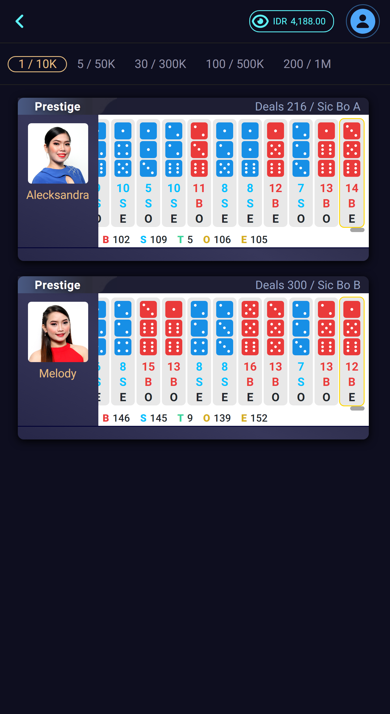
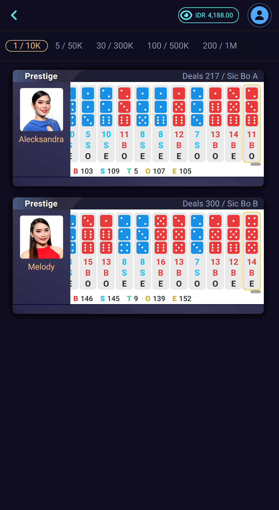

-
Payout
11:41:59 AM / 01:08:37:093 Skip
Payout
02.25.2024 11:41:59 AM 02.25.2024 12:50:36 PM 01:08:37:093 · #test-id=1PassPO Fetch: Wait Until There Is A Round Result For PayoutGiven I Go To The Live CasinoWhen I Join Live Sic Bo RevampAnd I Enter The Dealer TableThen I Place A Bet Until There Is A Round Result For All PayoutsSmall Big Even Odd Any Triple Three Dice Total 4 & 17 Three Dice Total 5 & 16 Three Dice Total 6 & 15 Three Dice Total 7 & 14 Three Dice Total 8 & 13 Three Dice Total 9 & 12 Three Dice Total 10 & 11 1 To 1 On One Dice 2 To 1 On One Dice 3 To 1 On One Dice Specific Triple Two Dice Combo Specific Double PassPO Test 1: Checking The Payout Calculation Of Small Betting OptionWhen I Check The Round ResultThen I Verify The Payout Calculation Of "Small" Betting OptionPassPO Test 2: Checking The Payout Calculation Of Big Betting OptionWhen I Check The Round ResultThen I Verify The Payout Calculation Of "Big" Betting OptionPassPO Test 3: Checking The Payout Calculation Of Even Betting OptionWhen I Check The Round ResultThen I Verify The Payout Calculation Of "Even" Betting OptionPassPO Test 4: Checking The Payout Calculation Of Odd Betting OptionWhen I Check The Round ResultThen I Verify The Payout Calculation Of "Odd" Betting OptionPassPO Test 6: Checking The Payout Calculation Of Any Triple Betting OptionWhen I Check The Round ResultThen I Verify The Payout Calculation Of "Any Triple" Betting OptionSkipPO Test 7: Checking The Payout Calculation Of Three Dice Total 4 & 17 Betting OptionWhen I Check The Round ResultThen I Verify The Payout Calculation Of "Three Dice Total 4 & 17" Betting OptionPassPO Test 8: Checking The Payout Calculation Of Three Dice Total 5 & 16 Betting OptionWhen I Check The Round ResultThen I Verify The Payout Calculation Of "Three Dice Total 5 & 16" Betting OptionPassPO Test 9: Checking The Payout Calculation Of Three Dice Total 6 & 15 Betting OptionWhen I Check The Round ResultThen I Verify The Payout Calculation Of "Three Dice Total 6 & 15" Betting OptionPassPO Test 10: Checking The Payout Calculation Of Three Dice Total 7 & 14 Betting OptionWhen I Check The Round ResultThen I Verify The Payout Calculation Of "Three Dice Total 7 & 14" Betting OptionPassPO Test 11: Checking The Payout Calculation Of Three Dice Total 8 & 13 Betting OptionWhen I Check The Round ResultThen I Verify The Payout Calculation Of "Three Dice Total 8 & 13" Betting OptionPassPO Test 12: Checking The Payout Calculation Of Three Dice Total 9 & 12 Betting OptionWhen I Check The Round ResultThen I Verify The Payout Calculation Of "Three Dice Total 9 & 12" Betting OptionPassPO Test 13: Checking The Payout Calculation Of Three Dice Total 10 & 11 Betting OptionWhen I Check The Round ResultThen I Verify The Payout Calculation Of "Three Dice Total 10 & 11" Betting OptionPassPO Test 14: Checking The Payout Calculation Of 1 To 1 On One Dice Betting OptionWhen I Check The Round ResultThen I Verify The Payout Calculation Of "1 To 1 On One Dice" Betting OptionPassPO Test 15: Checking The Payout Calculation Of 2 To 1 On One Dice Betting OptionWhen I Check The Round ResultThen I Verify The Payout Calculation Of "2 To 1 On One Dice" Betting OptionPassPO Test 16: Checking The Payout Calculation Of 3 To 1 On One Dice Betting OptionWhen I Check The Round ResultThen I Verify The Payout Calculation Of "3 To 1 On One Dice" Betting OptionPassPO Test 17: Checking The Payout Calculation Of Specific Triple Betting OptionWhen I Check The Round ResultThen I Verify The Payout Calculation Of "Specific Triple" Betting OptionPassPO Test 18: Checking The Payout Calculation Of Two Dice Combo Betting OptionWhen I Check The Round ResultThen I Verify The Payout Calculation Of "Two Dice Combo" Betting OptionPassPO Test 19: Checking The Payout Calculation Of Specific Double Betting OptionWhen I Check The Round ResultThen I Verify The Payout Calculation Of "Specific Double" Betting Option -
Bet Information
12:50:36 PM / 00:07:02:003 Pass
Bet Information
02.25.2024 12:50:36 PM 02.25.2024 12:57:38 PM 00:07:02:003 · #test-id=179PassBI Test 1: Checking Bet Information With Win ResultGiven I Go To The Live CasinoAnd I Join Live Sic Bo RevampAnd I Enter The Dealer TableWhen I Place Bet On Any Betting Option Until "Win"And I Go To My Bets On The MenuAnd I Click Bet DetailsThen I Verify The Bet Details Information With "Win Result"PassBI Test 2: Checking Bet Information With Lose ResultGiven I Go To The Live CasinoAnd I Join Live Sic Bo RevampAnd I Enter The Dealer TableWhen I Place Bet On Any Betting Option Until "Lose"And I Go To My Bets On The MenuAnd I Click Bet DetailsThen I Verify The Bet Details Information With "Lose Result"PassBI Test 3: Checking Bet Information With Multiple BetsGiven I Go To The Live CasinoAnd I Join Live Sic Bo RevampAnd I Enter The Dealer TableWhen I Place Bet On Any Betting Option Until "Round Complete"And I Go To My Bets On The MenuAnd I Click Bet DetailsThen I Verify The Bet Details Information With "Multiple Bets" -
Gameplay
12:57:38 PM / 01:00:19:986 Fail
Gameplay
02.25.2024 12:57:38 PM 02.25.2024 1:57:58 PM 01:00:19:986 · #test-id=252PassGP Test 1: Checking The Behavior Of The Game After Joining TableGiven I Go To The Live CasinoAnd I Join Live Sic Bo RevampWhen I Enter The Dealer TableThen Verify "The Behavior Of The Game After Joining Table"PassGP Test 4: Checking The Behavior Of Chips After Clicking On Each ChipsGiven I Go To The Live CasinoAnd I Join Live Sic Bo RevampWhen I Enter The Dealer TableAnd Click "On Each Chip"Then Verify "The Behavior Of Chips After Clicking On Each Chips"PassGP Test 5: Checking The Behavior Of The Game When Placed Bet On Any Betting OptionGiven I Go To The Live CasinoAnd I Join Live Sic Bo RevampWhen I Enter The Dealer TableAnd Place "A Bet On Any Betting Options"Then Verify "The Behavior Of The Game When Placed Bet On Any Betting Option"PassGP Test 6: Checking The Behavior Of The Game When Placed Bet And Did Not Confirm Until Less Than 10 SecondsGiven I Go To The Live CasinoAnd I Join Live Sic Bo RevampWhen I Enter The Dealer TableAnd Place "A Bet On Any Betting Options"And Wait "Until Timer Less Than Ten Seconds"Then Verify "The Behavior Of The Game When Placed Bet And Did Not Confirm Until Less Than 10 Seconds"PassGP Test 7: Checking The Behavior Of The Game After A RoundGiven I Go To The Live CasinoAnd I Join Live Sic Bo RevampWhen I Enter The Dealer TableThen Verify "The Behavior Of The Game After A Round"FailGP Test 8: Checking The Behavior Of The Game After Joining Table With Betting Phase OpenGiven I Go To The Live CasinoAnd I Join Live Sic Bo RevampWhen I Enter The Dealer TableThen Verify "The Behavior Of The Game After Joining Table With Betting Phase Close"steps.Hooks.afterStep(io.cucumber.java.Scenario)imageFailGP Test 9: Checking The Behavior Of The Game After Joining Table With Betting Phase CloseGiven I Go To The Live CasinoAnd I Join Live Sic Bo RevampWhen I Enter The Dealer TableThen Verify "The Behavior Of The Game After Joining Table With Betting Phase Open"steps.Hooks.afterStep(io.cucumber.java.Scenario)imagePassGP Test 10: Checking The Behavior Of The Game When New Round Is StartedGiven I Go To The Live CasinoAnd I Join Live Sic Bo RevampWhen I Enter The Dealer TableAnd Wait "Until New Round Starts"Then Verify "The Behavior Of The Game When New Round Is Started"PassGP Test 11: Checking The Behavior Of The Game When Placed Bet On Each Betting OptionsGiven I Go To The Live CasinoAnd I Join Live Sic Bo RevampWhen I Enter The Dealer TableAnd Place "A Bet On Each Betting Option"Then Verify "The Behavior Of The Game When Placed Bet On Each Betting Options"PassGP Test 12: Checking The Behavior Of The Game When Confirmed Bet Then Place And Confirm Bet AgainGiven I Go To The Live CasinoAnd I Join Live Sic Bo RevampWhen I Enter The Dealer TableAnd Place "And Confirm Any Betting Options"And Place "And Confirm Bet Again"Then Verify "The Behavior Of The Game When Confirmed Bet Then Place And Confirm Bet Again"PassGP Test 13: Checking The Behavior Of The Game When Wins RoundGiven I Go To The Live CasinoAnd I Join Live Sic Bo RevampWhen I Enter The Dealer TableAnd Place "And Confirm Any Betting Options"And Wait "Until Bet Wins"Then Verify "The Behavior Of The Game When Wins Round"PassGP Test 14: Checking The Behavior Of The Game When Did Not Bet For 8 RoundsGiven I Go To The Live CasinoAnd I Join Live Sic Bo RevampWhen I Enter The Dealer TableAnd Place "And Confirm Any Betting Options"And Do "Not Bet For 8 Consecutive Rounds"Then Verify "The Behavior Of The Game When Did Not Bet For 8 Rounds"PassGP Test 15: Checking The Behavior Of The Game When Did Not Bet For 9 RoundsGiven I Go To The Live CasinoAnd I Join Live Sic Bo RevampWhen I Enter The Dealer TableAnd Place "And Confirm Any Betting Options"And Do "Not Bet For 9 Consecutive Rounds"Then Verify "The Behavior Of The Game When Did Not Bet For 9 Rounds"PassGP Test 16: Checking The Behavior Of The Game When Placed Bet That Exceed Maximum LimitGiven I Go To The Live CasinoAnd I Join Live Sic Bo RevampWhen I Enter The Dealer TableAnd Place "A Bet That Exceeds Maximum Bet"Then Verify "The Behavior Of The Game When Placed Bet That Exceed Maximum Limit"PassGP Test 17: Checking The Behavior Of Double Button When Placed Minimum Bet On Any Betting OptionsGiven I Go To The Live CasinoAnd I Join Live Sic Bo RevampWhen I Enter The Dealer TableAnd Place "A Minimum Bet On Any Betting Options"Then Verify "The Behavior Of Double Button When Placed Minimum Bet On Any Betting Options"PassGP Test 18: Checking The Behavior Of Double Button When Placed Maximum Bet On Any Betting OptionsGiven I Go To The Live CasinoAnd I Join Live Sic Bo RevampWhen I Enter The Dealer TableAnd Place "A Maximum Bet On Any Betting Options"Then Verify "The Behavior Of Double Button When Placed Maximum Bet On Any Betting Options"PassGP Test 19: Checking The Behavior Of The Game When Click Back Button While Confirmed BetGiven I Go To The Live CasinoAnd I Join Live Sic Bo RevampWhen I Enter The Dealer TableAnd Place "And Confirm Any Betting Options"And Click "The Back Button"Then Verify "The Behavior Of The Game When Click Back Button While Confirmed Bet"PassGP Test 29: Checking The Behavior Of The Game When Placed Minimum Bet On Any Betting OptionsGiven I Go To The Live CasinoAnd I Join Live Sic Bo RevampWhen Click "The High Table Limits"And I Enter The Dealer TableAnd Place "A Bet On Any Betting Options"And Wait "Until Timer Less Than Ten Seconds"Then Verify "The Behavior Of The Game When Placed Minimum Bet On Any Betting Options" -
Functionality
1:57:58 PM / 01:19:21:835 Pass
Functionality
02.25.2024 1:57:58 PM 02.25.2024 3:17:20 PM 01:19:21:835 · #test-id=589PassFT Test 1: Checking The Previous Results Displayed On The Game LobbyGiven I Go To The Live CasinoAnd I Join Live Sic Bo RevampWhen I Enter The Dealer TableAnd I Check "The Round Result History"And I Go "Back To The Game Lobby"Then I Verify "The Previous Results Displayed On The Game Lobby"PassFT Test 2: Checking The Functionality Of The Show/Hide Balance ButtonGiven I Go To The Live CasinoAnd I Join Live Sic Bo RevampWhen I Click "The Show/Hide Balance Button"Then I Verify "The Functionality After Clicking The Show/Hide Balance Button"When I Click "The Show/Hide Balance Button"Then I Verify "The Functionality After Re-clicking The Show/Hide Balance Button"PassFT Test 3: Checking The Functionality On Each Table Limit ButtonGiven I Go To The Live CasinoAnd I Join Live Sic Bo RevampWhen I Click "On Each Table Limit"Then I Verify "The Functionality After Clicking Each Table Limit Button"PassFT Test 4: Checking The Functionality Of The Back Button On The Game LobbyGiven I Go To The Live CasinoAnd I Join Live Sic Bo RevampWhen I Click "The Back Button On Lobby"Then I Verify "The Functionality After Clicking The Back Button On The Game Lobby"PassFT Test 5: Checking The Functionality Of The Big CounterGiven I Go To The Live CasinoAnd I Join Live Sic Bo RevampThen I Verify "The Functionality Of The Big Counter"PassFT Test 6: Checking The Functionality Of The Small CounterGiven I Go To The Live CasinoAnd I Join Live Sic Bo RevampThen I Verify "The Functionality Of The Small Counter"PassFT Test 7: Checking The Functionality Of The Triple CounterGiven I Go To The Live CasinoAnd I Join Live Sic Bo RevampThen I Verify "The Functionality Of The Triple Counter"PassFT Test 8: Checking The Functionality Of The Odd CounterGiven I Go To The Live CasinoAnd I Join Live Sic Bo RevampThen I Verify "The Functionality Of The Odd Counter"PassFT Test 9: Checking The Functionality Of The Even CounterGiven I Go To The Live CasinoAnd I Join Live Sic Bo RevampThen I Verify "The Functionality Of The Even Counter"PassFT Test 11: Checking The Functionality Of The Menu ButtonGiven I Go To The Live CasinoAnd I Join Live Sic Bo RevampWhen I Enter The Dealer TableAnd I Click "The Menu Button"Then I Verify "The Functionality After Clicking The Menu Button"PassFT Test 12: Checking The Functionality Of My Bets In The MenuGiven I Go To The Live CasinoAnd I Join Live Sic Bo RevampWhen I Enter The Dealer TableAnd I Go "To My Bets"Then I Verify "The Functionality After Clicking The My Bets In The Menu"PassFT Test 13: Checking The Functionality Of Settled Round In My Bets In The MenuGiven I Go To The Live CasinoAnd I Join Live Sic Bo RevampWhen I Enter The Dealer TableAnd I Place "A Bet On Any Betting Options"And I Click "The Confirm Button"And I Wait "Until Round Is Over"And I Go "To My Bets"Then I Verify "The Functionality Of Settled Round In My Bets In The Menu"PassFT Test 14: Checking The Functionality Of The Details Button In Settled RoundsGiven I Go To The Live CasinoAnd I Join Live Sic Bo RevampWhen I Enter The Dealer TableAnd I Place "A Bet On Any Betting Options"And I Click "The Confirm Button"And I Wait "Until Round Is Over"And I Go "To My Bets"And I Go "To The Bet Details"Then I Verify "The Functionality After Clicking The Details Button In Settled Rounds"PassFT Test 15: Checking The Functionality Of Running Round In My Bets In The MenuGiven I Go To The Live CasinoAnd I Join Live Sic Bo RevampWhen I Enter The Dealer TableAnd I Place "A Bet On Any Betting Options"And I Click "The Confirm Button"And I Go "To My Bets"And I Click "The Running Tab"Then I Verify "The Functionality Of Running Round In My Bets In The Menu"PassFT Test 16: Checking The Functionality Of Limits And Payouts In The MenuGiven I Go To The Live CasinoAnd I Join Live Sic Bo RevampWhen I Enter The Dealer TableAnd I Go "To Limits And Payouts"Then I Verify "The Functionality After Clicking The Limits And Payouts In The Menu"PassFT Test 17: Checking The Functionality Of Help In The MenuGiven I Go To The Live CasinoAnd I Join Live Sic Bo RevampWhen I Enter The Dealer TableAnd I Go "To Help"Then I Verify "The Functionality After Clicking The Help In The Menu"PassFT Test 18: Checking The Functionality On Each Category In The MenuGiven I Go To The Live CasinoAnd I Join Live Sic Bo RevampWhen I Enter The Dealer TableAnd I Go "To Help"And I Click "On Each Category in Help"Then I Verify "The Functionality After Clicking Each Category In The Menu"When I Click "On Each Category in Help"Then I Verify "The Functionality After Re-clicking Each Category In The Menu"PassFT Test 19: Checking The Functionality Of Settings In The MenuGiven I Go To The Live CasinoAnd I Join Live Sic Bo RevampWhen I Enter The Dealer TableAnd I Go "To Settings"Then I Verify "The Functionality After Clicking The Settings In The Menu"PassFT Test 21: Checking The Functionality Of The Switch Table ButtonGiven I Go To The Live CasinoAnd I Join Live Sic Bo RevampWhen I Enter The Dealer TableAnd I Click "The Switch Table Button"Then I Verify "The Functionality After Clicking The Switch Table Button"PassFT Test 22: Checking The Functionality After Selecting Other Table In The Switch TableGiven I Go To The Live CasinoAnd I Join Live Sic Bo RevampWhen I Enter The Dealer TableAnd I Click "The Switch Table Button"And I Go "To Other Sic Bo Table"Then I Verify "The Functionality After Selecting Other Table In The Switch Table"PassFT Test 23: Checking The Functionality After Selecting Other Product In The Switch TableGiven I Go To The Live CasinoAnd I Join Live Sic Bo RevampWhen I Enter The Dealer TableAnd I Click "The Switch Table Button"And I Go "To Other Live Products"Then I Verify "The Functionality After Selecting Other Product In The Switch Table"PassFT Test 24: Checking The Functionality After Seating On Other Live Products TableGiven I Go To The Live CasinoAnd I Join Live Sic Bo RevampWhen I Enter The Dealer TableAnd I Click "The Switch Table Button"And I Go "To Other Live Products Table"Then I Verify "The Functionality After Seating On Other Live Products Table"PassFT Test 25: Checking The Functionality Of The Table Limit ButtonGiven I Go To The Live CasinoAnd I Join Live Sic Bo RevampWhen I Enter The Dealer TableAnd I Wait "Until Betting Phase"And I Click "The Table Limit Button"Then I Verify "The Functionality After Clicking The Table Limit Button"PassFT Test 26: Checking The Functionality After Selecting Other Table LimitGiven I Go To The Live CasinoAnd I Join Live Sic Bo RevampWhen I Enter The Dealer TableAnd I Wait "Until Betting Phase"And I Click "The Table Limit Button"And I Go "To Other Table Limit Table"Then I Verify "The Functionality After Selecting Other Table Limit"PassFT Test 27: Checking The Functionality Of The Statistics ButtonGiven I Go To The Live CasinoAnd I Join Live Sic Bo RevampWhen I Enter The Dealer TableAnd I Click "The Statistics Button"Then I Verify "The Functionality After Clicking The Statistics Button"PassFT Test 28: Checking The Functionality Of The Expand Shrink ButtonGiven I Go To The Live CasinoAnd I Join Live Sic Bo RevampWhen I Enter The Dealer TableAnd I Wait "Until Betting Phase"And I Click "The Expand Shrink Button"Then I Verify "The Functionality After Clicking Expand Shrink Button"When I Click "The Expand Shrink Button"Then I Verify "The Functionality After Re-clicking Expand Shrink Button"PassFT Test 29: Checking The Functionality Of The Edit Chips ButtonGiven I Go To The Live CasinoAnd I Join Live Sic Bo RevampWhen I Enter The Dealer TableAnd I Check "The Default Chips"And I Click "The Edit Chips Button"Then I Verify "The Functionality After Clicking The Edit Chips Button"PassFT Test 30: Checking The Functionality After Changing Betting ChipsGiven I Go To The Live CasinoAnd I Join Live Sic Bo RevampWhen I Enter The Dealer TableAnd I Click "The Edit Chips Button"And I Do "Remove Any Chips On My Chips"Then I Verify "The Functionality After Removing Betting Chips"When I Do "Select Any Chips On Chips Selections"Then I Verify "The Functionality After Adding Betting Chips"PassFT Test 31: Checking The Functionality Of The Save Button In Chip SettingsGiven I Go To The Live CasinoAnd I Join Live Sic Bo RevampWhen I Enter The Dealer TableAnd I Click "The Edit Chips Button"And I Do "Replace Any Chip On My Chips"And I Click "The Save Button"Then I Verify "The Functionality After Clicking The Save Button In Chip Settings"PassFT Test 32: Checking The Functionality Of The Undo ButtonGiven I Go To The Live CasinoAnd I Join Live Sic Bo RevampWhen I Enter The Dealer TableAnd I Place "And Undo Any Betting Options"And I Place "A Bet On Two Or More Betting Options"And I Click "The Undo Button"Then I Verify "The Functionality After Clicking The Undo Button"PassFT Test 33: Checking The Functionality Of Undo Button When Press And HoldGiven I Go To The Live CasinoAnd I Join Live Sic Bo RevampWhen I Enter The Dealer TableAnd I Place "A Bet On Four Or More Betting Options"And I Do "Press And Hold The Undo Button"Then I Verify "The Functionality After Pressing And Holding The Undo Button"PassFT Test 34: Checking The Functionality Of The Confirm ButtonGiven I Go To The Live CasinoAnd I Join Live Sic Bo RevampWhen I Enter The Dealer TableAnd I Place "A Bet On Any Betting Options"And I Check "The Betting Chip"And I Click "The Confirm Button"Then I Verify "The Functionality After Clicking The Confirm Button"PassFT Test 35: Checking The Functionality Of The Top up And Confirm ButtonGiven I Go To The Live CasinoAnd I Join Live Sic Bo RevampWhen I Click "The High Table Limits"And I Enter The Dealer TableAnd I Place "A Bet On Any Betting Options"Then I Verify "The Functionality Of The Confirm Button"And I Click "The Confirm Button"Then I Verify "The Functionality After Clicking The Top Up And Confirm Button"PassFT Test 36: Checking The Functionality Of The Switch Table When Betting In Multiple TablesGiven I Go To The Live CasinoAnd I Join Live Sic Bo RevampWhen I Enter The Dealer TableAnd I Place "And Confirm Any Betting Options"And I Do "Switch And Join Another Table"And I Place "And Confirm Any Betting Options"Then I Verify "The Functionality Of The Switch Table When Betting In Multiple Tables"PassFT Test 37: Checking The Functionality Of The Betting Timer Once It StartsGiven I Go To The Live CasinoAnd I Join Live Sic Bo RevampWhen I Enter The Dealer TableAnd I Wait "Until Betting Timer Starts"Then I Verify "The Functionality Of The Betting Timer Once It Starts"PassFT Test 38: Checking The Functionality Of The Betting Timer Once It EndsGiven I Go To The Live CasinoAnd I Join Live Sic Bo RevampWhen I Enter The Dealer TableAnd I Wait "Until Betting Timer Ends"Then I Verify "The Functionality Of The Betting Timer Once It Ends"PassFT Test 39: Checking The Functionality Of The Double ButtonGiven I Go To The Live CasinoAnd I Join Live Sic Bo RevampWhen I Enter The Dealer TableAnd I Place "A Bet On Any Betting Options"And I Check "The Placed Bet"And I Click "The Double Button"Then I Verify "The Functionality After Clicking The Double Button"PassFT Test 40: Checking The Functionality Of Total Balance After Confirming Any BetsGiven I Go To The Live CasinoAnd I Join Live Sic Bo RevampWhen I Enter The Dealer TableAnd I Place "And Confirm Any Betting Options"Then I Verify "The Functionality Of Total Balance After Confirming Any Bets"PassFT Test 41: Checking The Functionality Of Total Balance After Confirming And Doubling BetsGiven I Go To The Live CasinoAnd I Join Live Sic Bo RevampWhen I Enter The Dealer TableAnd I Place "A Bet On Any Betting Options"And I Check "The Placed Bet"And I Click "The Double Button"And I Click "The Confirm Button"Then I Verify "The Functionality Of Total Balance After Confirming And Doubling Bets"PassFT Test 42: Checking The Functionality Of Total Balance After Winning RoundGiven I Go To The Live CasinoAnd I Join Live Sic Bo RevampWhen I Enter The Dealer TableAnd I Place "And Confirm Any Betting Options"And I Wait "Until Bet Wins"Then I Verify "The Functionality Of Total Balance After Winning Round"PassFT Test 43: Checking The Functionality After Betting Timer Reaches Last 10 Seconds And Not ConfirmingGiven I Go To The Live CasinoAnd I Join Live Sic Bo RevampWhen I Enter The Dealer TableAnd I Place "A Bet On Any Betting Options"And I Wait "Until Betting Timer Reaches Last 10 Seconds"Then I Verify "The Functionality After Betting Timer Reaches Last 10 Seconds And Not Confirming"PassFT Test 44: Checking The Functionality Of The Confirm Button On Popup MessageGiven I Go To The Live CasinoAnd I Join Live Sic Bo RevampWhen I Enter The Dealer TableAnd I Place "A Bet On Any Betting Options"And I Wait "Until Betting Timer Reaches Last 10 Seconds"And I Click "The Popup Confirm Button"Then I Verify "The Functionality After Clicking The Confirm Button On Popup Message"PassFT Test 45: Checking The Functionality Of The Not Now Button On Popup MessageGiven I Go To The Live CasinoAnd I Join Live Sic Bo RevampWhen I Enter The Dealer TableAnd I Place "A Bet On Any Betting Options"And I Wait "Until Betting Timer Reaches Last 10 Seconds"And I Click "The Popup Not Now Button"Then I Verify "The Functionality After Clicking The Not Now Button On Popup Message"PassFT Test 46: Checking The Functionality Of The Back Button On GameGiven I Go To The Live CasinoAnd I Join Live Sic Bo RevampWhen I Enter The Dealer TableAnd I Click "The Back Button On Game"Then I Verify "The Functionality After Clicking The Back Button On Game"PassFT Test 47: Checking The Functionality Of The Round Result HistoryGiven I Go To The Live CasinoAnd I Join Live Sic Bo RevampWhen I Enter The Dealer TableAnd I Wait "Until Round Is Finished"Then I Verify "The Functionality Of The Round Result History"PassFT Test 48: Checking The Functionality After Increasing A Placed BetGiven I Go To The Live CasinoAnd I Join Live Sic Bo RevampWhen I Enter The Dealer TableAnd I Place "A Bet On Any Betting Options"And I Place "A Bet On Same Betting Options"Then I Verify "The Functionality After Increasing A Placed Bet" -
Result And Statistics
3:17:20 PM / 00:01:53:013 Fail
Result And Statistics
02.25.2024 3:17:20 PM 02.25.2024 3:19:13 PM 00:01:53:013 · #test-id=1,538FailRS Fetch: Wait Until There Is A Round Result For Result And StatisticsGiven I Go To The Live CasinoWhen I Join Live Sic Bo RevampAnd I Enter The Dealer Table With 300 RoundsThen I Place A Bet Until There Is A Round Result For All Results And StatisticsBig Result Small Result Any Triple Result Big Percentage Any Triple Percentage Small Percentage Odd Percentage Even Percentage Dice 1 Percentage Dice 2 Percentage Dice 3 Percentage Dice 4 Percentage Dice 5 Percentage Dice 6 Percentage Hot Numbers Win Cold Numbers Lose Cold Numbers Win Step skippedSkipRS Test 1: Checking The Data Displayed On Result Panel When Big WinsWhen I Check The Round ResultThen I Verify The Result Panel When "Big" WinsSkipRS Test 2: Checking The Data Displayed On Result Panel When Small WinsWhen I Check The Round ResultThen I Verify The Result Panel When "Small" WinsSkipRS Test 3: Checking The Data Displayed On Result Panel When Any Triple WinsWhen I Check The Round ResultThen I Verify The Result Panel When "Any Triple" WinsSkipRS Test 1 Of 4: Checking The Big Percentage Displayed On StatisticsWhen I Check The Round ResultThen I Verify The "Big" Percentage DisplayedSkipRS Test 2 Of 4: Checking The Any Triple Percentage Displayed On StatisticsWhen I Check The Round ResultThen I Verify The "Any Triple" Percentage DisplayedSkipRS Test 3 Of 4: Checking The Small Percentage Displayed On StatisticsWhen I Check The Round ResultThen I Verify The "Small" Percentage DisplayedSkipRS Test 4 Of 4: Checking The Odd Percentage Displayed On StatisticsWhen I Check The Round ResultThen I Verify The "Odd" Percentage DisplayedSkipRS Test 5 Of 4: Checking The Even Percentage Displayed On StatisticsWhen I Check The Round ResultThen I Verify The "Even" Percentage DisplayedSkipRS Test 6 Of 4: Checking The Dice 1 Percentage Displayed On StatisticsWhen I Check The Round ResultThen I Verify The "Dice 1" Percentage DisplayedSkipRS Test 7 Of 4: Checking The Dice 2 Percentage Displayed On StatisticsWhen I Check The Round ResultThen I Verify The "Dice 2" Percentage DisplayedSkipRS Test 8 Of 4: Checking The Dice 3 Percentage Displayed On StatisticsWhen I Check The Round ResultThen I Verify The "Dice 3" Percentage DisplayedSkipRS Test 9 Of 4: Checking The Dice 4 Percentage Displayed On StatisticsWhen I Check The Round ResultThen I Verify The "Dice 4" Percentage DisplayedSkipRS Test 10 Of 4: Checking The Dice 5 Percentage Displayed On StatisticsWhen I Check The Round ResultThen I Verify The "Dice 5" Percentage DisplayedSkipRS Test 11 Of 4: Checking The Dice 6 Percentage Displayed On StatisticsWhen I Check The Round ResultThen I Verify The "Dice 6" Percentage DisplayedSkipRS Test 12 Of 4: Checking The Hot Numbers Displayed On Statistics If They WinWhen I Check The Round ResultThen I Verify The "Hot" Numbers Displayed If They "Win"SkipRS Test 13 Of 4: Checking The Cold Numbers Displayed On Statistics If They Did Not WinWhen I Check The Round ResultThen I Verify The "Cold" Numbers Displayed If They "Lose"SkipRS Test 14 Of 4: Checking The Cold Numbers Displayed On Statistics If They WinWhen I Check The Round ResultThen I Verify The "Cold" Numbers Displayed If They "Win" -
User Interface
3:19:13 PM / 00:05:52:600 Pass
User Interface
02.25.2024 3:19:13 PM 02.25.2024 3:25:06 PM 00:05:52:600 · #test-id=1,707PassUI Test 1: Checking The Thumbnail Of Live Sic Bo RevampGiven I Go To The Live CasinoThen I Verify The Thumbnail Of GamePassUI Test 2: Launching Of Live Sic Bo RevampGiven I Go To The Live CasinoWhen I Join Live Sic Bo RevampThen I Verify The Launching Of GamePassUI Test 3: Checking The UI Of Live Sic Bo Revamp LobbyGiven I Go To The Live CasinoWhen I Join Live Sic Bo RevampThen I Verify The Game LobbyPassUI Test 4: Checking The UI Of Live Sic Bo Revamp During Betting PhaseGiven I Go To The Live CasinoWhen I Join Live Sic Bo RevampAnd I Enter The Dealer TableThen I Verify The UI Of Game During Betting PhasePassUI Test 5: Checking The UI Of Live Sic Bo Revamp During Dealing PhaseGiven I Go To The Live CasinoWhen I Join Live Sic Bo RevampAnd I Enter The Dealer TableThen I Verify The UI Of Game During Dealing PhasePassUI Test 6: Checking The Mapping Of Live Sic Bo Betting OptionsGiven I Go To The Live CasinoWhen I Join Live Sic Bo RevampAnd I Enter The Dealer TableThen I Verify The Mapping Of Betting Options
-
java.lang.AssertionError
2 tests
java.lang.AssertionError
2 failedStatus Timestamp TestName Fail 13:06:18 PM Then Verify "The Behavior Of The Game After Joining Table With Betting Phase Close" Gameplay.GP Test 8: Checking The Behavior Of The Game After Joining Table With Betting Phase Open.Then Verify "The Behavior Of The Game After Joining Table With Betting Phase Close"Fail 13:08:43 PM Then Verify "The Behavior Of The Game After Joining Table With Betting Phase Open" Gameplay.GP Test 9: Checking The Behavior Of The Game After Joining Table With Betting Phase Close.Then Verify "The Behavior Of The Game After Joining Table With Betting Phase Open" -
org.testng.SkipException
18 tests
org.testng.SkipException
18 skippedStatus Timestamp TestName Skip 12:50:03 PM Then I Verify The Payout Calculation Of "Three Dice Total 4 & 17" Betting Option Payout.PO Test 7: Checking The Payout Calculation Of Three Dice Total 4 & 17 Betting Option.Then I Verify The Payout Calculation Of "Three Dice Total 4 & 17" Betting OptionSkip 15:18:35 PM Then I Verify The Result Panel When "Big" Wins Result And Statistics.RS Test 1: Checking The Data Displayed On Result Panel When Big Wins.Then I Verify The Result Panel When "Big" WinsSkip 15:18:37 PM Then I Verify The Result Panel When "Small" Wins Result And Statistics.RS Test 2: Checking The Data Displayed On Result Panel When Small Wins.Then I Verify The Result Panel When "Small" WinsSkip 15:18:39 PM Then I Verify The Result Panel When "Any Triple" Wins Result And Statistics.RS Test 3: Checking The Data Displayed On Result Panel When Any Triple Wins.Then I Verify The Result Panel When "Any Triple" WinsSkip 15:18:41 PM Then I Verify The "Big" Percentage Displayed Result And Statistics.RS Test 1 Of 4: Checking The Big Percentage Displayed On Statistics.Then I Verify The "Big" Percentage DisplayedSkip 15:18:44 PM Then I Verify The "Any Triple" Percentage Displayed Result And Statistics.RS Test 2 Of 4: Checking The Any Triple Percentage Displayed On Statistics.Then I Verify The "Any Triple" Percentage DisplayedSkip 15:18:47 PM Then I Verify The "Small" Percentage Displayed Result And Statistics.RS Test 3 Of 4: Checking The Small Percentage Displayed On Statistics.Then I Verify The "Small" Percentage DisplayedSkip 15:18:49 PM Then I Verify The "Odd" Percentage Displayed Result And Statistics.RS Test 4 Of 4: Checking The Odd Percentage Displayed On Statistics.Then I Verify The "Odd" Percentage DisplayedSkip 15:18:51 PM Then I Verify The "Even" Percentage Displayed Result And Statistics.RS Test 5 Of 4: Checking The Even Percentage Displayed On Statistics.Then I Verify The "Even" Percentage DisplayedSkip 15:18:54 PM Then I Verify The "Dice 1" Percentage Displayed Result And Statistics.RS Test 6 Of 4: Checking The Dice 1 Percentage Displayed On Statistics.Then I Verify The "Dice 1" Percentage DisplayedSkip 15:18:57 PM Then I Verify The "Dice 2" Percentage Displayed Result And Statistics.RS Test 7 Of 4: Checking The Dice 2 Percentage Displayed On Statistics.Then I Verify The "Dice 2" Percentage DisplayedSkip 15:18:59 PM Then I Verify The "Dice 3" Percentage Displayed Result And Statistics.RS Test 8 Of 4: Checking The Dice 3 Percentage Displayed On Statistics.Then I Verify The "Dice 3" Percentage DisplayedSkip 15:19:01 PM Then I Verify The "Dice 4" Percentage Displayed Result And Statistics.RS Test 9 Of 4: Checking The Dice 4 Percentage Displayed On Statistics.Then I Verify The "Dice 4" Percentage DisplayedSkip 15:19:03 PM Then I Verify The "Dice 5" Percentage Displayed Result And Statistics.RS Test 10 Of 4: Checking The Dice 5 Percentage Displayed On Statistics.Then I Verify The "Dice 5" Percentage DisplayedSkip 15:19:06 PM Then I Verify The "Dice 6" Percentage Displayed Result And Statistics.RS Test 11 Of 4: Checking The Dice 6 Percentage Displayed On Statistics.Then I Verify The "Dice 6" Percentage DisplayedSkip 15:19:08 PM Then I Verify The "Hot" Numbers Displayed If They "Win" Result And Statistics.RS Test 12 Of 4: Checking The Hot Numbers Displayed On Statistics If They Win.Then I Verify The "Hot" Numbers Displayed If They "Win"Skip 15:19:11 PM Then I Verify The "Cold" Numbers Displayed If They "Lose" Result And Statistics.RS Test 13 Of 4: Checking The Cold Numbers Displayed On Statistics If They Did Not Win.Then I Verify The "Cold" Numbers Displayed If They "Lose"Skip 15:19:13 PM Then I Verify The "Cold" Numbers Displayed If They "Win" Result And Statistics.RS Test 14 Of 4: Checking The Cold Numbers Displayed On Statistics If They Win.Then I Verify The "Cold" Numbers Displayed If They "Win" -
org.openqa.selenium.TimeoutException
1 tests
org.openqa.selenium.TimeoutException
1 failedStatus Timestamp TestName Fail 15:18:17 PM And I Enter The Dealer Table With 300 Rounds Result And Statistics.RS Fetch: Wait Until There Is A Round Result For Result And Statistics.And I Enter The Dealer Table With 300 Rounds
-
@FunctionalityTest44
1 tests
@FunctionalityTest44
1 passedStatus Timestamp TestName Pass 15:07:09 PM FT Test 44: Checking The Functionality Of The Confirm Button On Popup Message Functionality.FT Test 44: Checking The Functionality Of The Confirm Button On Popup Message -
@ResultAndStatisticsTest4_3
1 tests
@ResultAndStatisticsTest4_3
1 skippedStatus Timestamp TestName Skip 15:18:44 PM RS Test 3 Of 4: Checking The Small Percentage Displayed On Statistics Result And Statistics.RS Test 3 Of 4: Checking The Small Percentage Displayed On Statistics -
@FunctionalityTest18
1 tests
@FunctionalityTest18
1 passedStatus Timestamp TestName Pass 14:21:00 PM FT Test 18: Checking The Functionality On Each Category In The Menu Functionality.FT Test 18: Checking The Functionality On Each Category In The Menu -
@FunctionalityTest4
1 tests
@FunctionalityTest4
1 passedStatus Timestamp TestName Pass 14:01:33 PM FT Test 4: Checking The Functionality Of The Back Button On The Game Lobby Functionality.FT Test 4: Checking The Functionality Of The Back Button On The Game Lobby -
@FunctionalityTest21
1 tests
@FunctionalityTest21
1 passedStatus Timestamp TestName Pass 14:23:40 PM FT Test 21: Checking The Functionality Of The Switch Table Button Functionality.FT Test 21: Checking The Functionality Of The Switch Table Button -
@FunctionalityTest41
1 tests
@FunctionalityTest41
1 passedStatus Timestamp TestName Pass 14:59:55 PM FT Test 41: Checking The Functionality Of Total Balance After Confirming And Doubling Bets Functionality.FT Test 41: Checking The Functionality Of Total Balance After Confirming And Doubling Bets -
@PayoutTest18
1 tests
@PayoutTest18
1 passedStatus Timestamp TestName Pass 12:50:31 PM PO Test 18: Checking The Payout Calculation Of Two Dice Combo Betting Option Payout.PO Test 18: Checking The Payout Calculation Of Two Dice Combo Betting Option -
@PayoutTest12
1 tests
@PayoutTest12
1 passedStatus Timestamp TestName Pass 12:50:17 PM PO Test 12: Checking The Payout Calculation Of Three Dice Total 9 & 12 Betting Option Payout.PO Test 12: Checking The Payout Calculation Of Three Dice Total 9 & 12 Betting Option -
@GameplayTest18
1 tests
@GameplayTest18
1 passedStatus Timestamp TestName Pass 13:51:37 PM GP Test 18: Checking The Behavior Of Double Button When Placed Maximum Bet On Any Betting Options Gameplay.GP Test 18: Checking The Behavior Of Double Button When Placed Maximum Bet On Any Betting Options -
@FunctionalityTest30
1 tests
@FunctionalityTest30
1 passedStatus Timestamp TestName Pass 14:34:40 PM FT Test 30: Checking The Functionality After Changing Betting Chips Functionality.FT Test 30: Checking The Functionality After Changing Betting Chips -
@GameplayTest19
1 tests
@GameplayTest19
1 passedStatus Timestamp TestName Pass 13:53:26 PM GP Test 19: Checking The Behavior Of The Game When Click Back Button While Confirmed Bet Gameplay.GP Test 19: Checking The Behavior Of The Game When Click Back Button While Confirmed Bet -
@FunctionalityTest19
1 tests
@FunctionalityTest19
1 passedStatus Timestamp TestName Pass 14:22:06 PM FT Test 19: Checking The Functionality Of Settings In The Menu Functionality.FT Test 19: Checking The Functionality Of Settings In The Menu -
@GameplayTest17
1 tests
@GameplayTest17
1 passedStatus Timestamp TestName Pass 13:50:26 PM GP Test 17: Checking The Behavior Of Double Button When Placed Minimum Bet On Any Betting Options Gameplay.GP Test 17: Checking The Behavior Of Double Button When Placed Minimum Bet On Any Betting Options -
@FunctionalityTest2
1 tests
@FunctionalityTest2
1 passedStatus Timestamp TestName Pass 13:59:15 PM FT Test 2: Checking The Functionality Of The Show/Hide Balance Button Functionality.FT Test 2: Checking The Functionality Of The Show/Hide Balance Button -
@FunctionalityTest6
1 tests
@FunctionalityTest6
1 passedStatus Timestamp TestName Pass 14:04:01 PM FT Test 6: Checking The Functionality Of The Small Counter Functionality.FT Test 6: Checking The Functionality Of The Small Counter -
@BetInformationTest3
1 tests
@BetInformationTest3
1 passedStatus Timestamp TestName Pass 12:55:11 PM BI Test 3: Checking Bet Information With Multiple Bets Bet Information.BI Test 3: Checking Bet Information With Multiple Bets -
@GameplayTest11
1 tests
@GameplayTest11
1 passedStatus Timestamp TestName Pass 13:11:31 PM GP Test 11: Checking The Behavior Of The Game When Placed Bet On Each Betting Options Gameplay.GP Test 11: Checking The Behavior Of The Game When Placed Bet On Each Betting Options -
@FunctionalityTest1
1 tests
@FunctionalityTest1
1 passedStatus Timestamp TestName Pass 13:57:58 PM FT Test 1: Checking The Previous Results Displayed On The Game Lobby Functionality.FT Test 1: Checking The Previous Results Displayed On The Game Lobby -
@PayoutTest17
1 tests
@PayoutTest17
1 passedStatus Timestamp TestName Pass 12:50:29 PM PO Test 17: Checking The Payout Calculation Of Specific Triple Betting Option Payout.PO Test 17: Checking The Payout Calculation Of Specific Triple Betting Option -
@ResultAndStatistics
18 tests
@ResultAndStatistics
1 failed 17 skippedStatus Timestamp TestName Fail 15:17:20 PM RS Fetch: Wait Until There Is A Round Result For Result And Statistics Result And Statistics.RS Fetch: Wait Until There Is A Round Result For Result And StatisticsSkip 15:18:32 PM RS Test 1: Checking The Data Displayed On Result Panel When Big Wins Result And Statistics.RS Test 1: Checking The Data Displayed On Result Panel When Big WinsSkip 15:18:35 PM RS Test 2: Checking The Data Displayed On Result Panel When Small Wins Result And Statistics.RS Test 2: Checking The Data Displayed On Result Panel When Small WinsSkip 15:18:37 PM RS Test 3: Checking The Data Displayed On Result Panel When Any Triple Wins Result And Statistics.RS Test 3: Checking The Data Displayed On Result Panel When Any Triple WinsSkip 15:18:39 PM RS Test 1 Of 4: Checking The Big Percentage Displayed On Statistics Result And Statistics.RS Test 1 Of 4: Checking The Big Percentage Displayed On StatisticsSkip 15:18:42 PM RS Test 2 Of 4: Checking The Any Triple Percentage Displayed On Statistics Result And Statistics.RS Test 2 Of 4: Checking The Any Triple Percentage Displayed On StatisticsSkip 15:18:44 PM RS Test 3 Of 4: Checking The Small Percentage Displayed On Statistics Result And Statistics.RS Test 3 Of 4: Checking The Small Percentage Displayed On StatisticsSkip 15:18:47 PM RS Test 4 Of 4: Checking The Odd Percentage Displayed On Statistics Result And Statistics.RS Test 4 Of 4: Checking The Odd Percentage Displayed On StatisticsSkip 15:18:49 PM RS Test 5 Of 4: Checking The Even Percentage Displayed On Statistics Result And Statistics.RS Test 5 Of 4: Checking The Even Percentage Displayed On StatisticsSkip 15:18:52 PM RS Test 6 Of 4: Checking The Dice 1 Percentage Displayed On Statistics Result And Statistics.RS Test 6 Of 4: Checking The Dice 1 Percentage Displayed On StatisticsSkip 15:18:54 PM RS Test 7 Of 4: Checking The Dice 2 Percentage Displayed On Statistics Result And Statistics.RS Test 7 Of 4: Checking The Dice 2 Percentage Displayed On StatisticsSkip 15:18:57 PM RS Test 8 Of 4: Checking The Dice 3 Percentage Displayed On Statistics Result And Statistics.RS Test 8 Of 4: Checking The Dice 3 Percentage Displayed On StatisticsSkip 15:18:59 PM RS Test 9 Of 4: Checking The Dice 4 Percentage Displayed On Statistics Result And Statistics.RS Test 9 Of 4: Checking The Dice 4 Percentage Displayed On StatisticsSkip 15:19:01 PM RS Test 10 Of 4: Checking The Dice 5 Percentage Displayed On Statistics Result And Statistics.RS Test 10 Of 4: Checking The Dice 5 Percentage Displayed On StatisticsSkip 15:19:04 PM RS Test 11 Of 4: Checking The Dice 6 Percentage Displayed On Statistics Result And Statistics.RS Test 11 Of 4: Checking The Dice 6 Percentage Displayed On StatisticsSkip 15:19:06 PM RS Test 12 Of 4: Checking The Hot Numbers Displayed On Statistics If They Win Result And Statistics.RS Test 12 Of 4: Checking The Hot Numbers Displayed On Statistics If They WinSkip 15:19:09 PM RS Test 13 Of 4: Checking The Cold Numbers Displayed On Statistics If They Did Not Win Result And Statistics.RS Test 13 Of 4: Checking The Cold Numbers Displayed On Statistics If They Did Not WinSkip 15:19:11 PM RS Test 14 Of 4: Checking The Cold Numbers Displayed On Statistics If They Win Result And Statistics.RS Test 14 Of 4: Checking The Cold Numbers Displayed On Statistics If They Win -
@FunctionalityTest40
1 tests
@FunctionalityTest40
1 passedStatus Timestamp TestName Pass 14:56:58 PM FT Test 40: Checking The Functionality Of Total Balance After Confirming Any Bets Functionality.FT Test 40: Checking The Functionality Of Total Balance After Confirming Any Bets -
@FunctionalityTest13
1 tests
@FunctionalityTest13
1 passedStatus Timestamp TestName Pass 14:11:43 PM FT Test 13: Checking The Functionality Of Settled Round In My Bets In The Menu Functionality.FT Test 13: Checking The Functionality Of Settled Round In My Bets In The Menu -
@UserInterfaceTest6
1 tests
@UserInterfaceTest6
1 passedStatus Timestamp TestName Pass 15:24:06 PM UI Test 6: Checking The Mapping Of Live Sic Bo Betting Options User Interface.UI Test 6: Checking The Mapping Of Live Sic Bo Betting Options -
@PayoutTest2
1 tests
@PayoutTest2
1 passedStatus Timestamp TestName Pass 12:49:41 PM PO Test 2: Checking The Payout Calculation Of Big Betting Option Payout.PO Test 2: Checking The Payout Calculation Of Big Betting Option -
@FunctionalityTest38
1 tests
@FunctionalityTest38
1 passedStatus Timestamp TestName Pass 14:54:04 PM FT Test 38: Checking The Functionality Of The Betting Timer Once It Ends Functionality.FT Test 38: Checking The Functionality Of The Betting Timer Once It Ends -
@ResultAndStatisticsTest1
1 tests
@ResultAndStatisticsTest1
1 skippedStatus Timestamp TestName Skip 15:18:32 PM RS Test 1: Checking The Data Displayed On Result Panel When Big Wins Result And Statistics.RS Test 1: Checking The Data Displayed On Result Panel When Big Wins -
@ResultAndStatisticsTest4_1
1 tests
@ResultAndStatisticsTest4_1
1 skippedStatus Timestamp TestName Skip 15:18:39 PM RS Test 1 Of 4: Checking The Big Percentage Displayed On Statistics Result And Statistics.RS Test 1 Of 4: Checking The Big Percentage Displayed On Statistics -
@UserInterfaceTest2
1 tests
@UserInterfaceTest2
1 passedStatus Timestamp TestName Pass 15:19:43 PM UI Test 2: Launching Of Live Sic Bo Revamp User Interface.UI Test 2: Launching Of Live Sic Bo Revamp -
@Functionality
46 tests
@Functionality
46 passedStatus Timestamp TestName Pass 13:57:58 PM FT Test 1: Checking The Previous Results Displayed On The Game Lobby Functionality.FT Test 1: Checking The Previous Results Displayed On The Game LobbyPass 13:59:15 PM FT Test 2: Checking The Functionality Of The Show/Hide Balance Button Functionality.FT Test 2: Checking The Functionality Of The Show/Hide Balance ButtonPass 14:00:36 PM FT Test 3: Checking The Functionality On Each Table Limit Button Functionality.FT Test 3: Checking The Functionality On Each Table Limit ButtonPass 14:01:33 PM FT Test 4: Checking The Functionality Of The Back Button On The Game Lobby Functionality.FT Test 4: Checking The Functionality Of The Back Button On The Game LobbyPass 14:03:04 PM FT Test 5: Checking The Functionality Of The Big Counter Functionality.FT Test 5: Checking The Functionality Of The Big CounterPass 14:04:01 PM FT Test 6: Checking The Functionality Of The Small Counter Functionality.FT Test 6: Checking The Functionality Of The Small CounterPass 14:04:57 PM FT Test 7: Checking The Functionality Of The Triple Counter Functionality.FT Test 7: Checking The Functionality Of The Triple CounterPass 14:05:54 PM FT Test 8: Checking The Functionality Of The Odd Counter Functionality.FT Test 8: Checking The Functionality Of The Odd CounterPass 14:06:49 PM FT Test 9: Checking The Functionality Of The Even Counter Functionality.FT Test 9: Checking The Functionality Of The Even CounterPass 14:07:45 PM FT Test 11: Checking The Functionality Of The Menu Button Functionality.FT Test 11: Checking The Functionality Of The Menu ButtonPass 14:08:44 PM FT Test 12: Checking The Functionality Of My Bets In The Menu Functionality.FT Test 12: Checking The Functionality Of My Bets In The MenuPass 14:11:43 PM FT Test 13: Checking The Functionality Of Settled Round In My Bets In The Menu Functionality.FT Test 13: Checking The Functionality Of Settled Round In My Bets In The MenuPass 14:14:15 PM FT Test 14: Checking The Functionality Of The Details Button In Settled Rounds Functionality.FT Test 14: Checking The Functionality Of The Details Button In Settled RoundsPass 14:16:29 PM FT Test 15: Checking The Functionality Of Running Round In My Bets In The Menu Functionality.FT Test 15: Checking The Functionality Of Running Round In My Bets In The MenuPass 14:18:53 PM FT Test 16: Checking The Functionality Of Limits And Payouts In The Menu Functionality.FT Test 16: Checking The Functionality Of Limits And Payouts In The MenuPass 14:19:57 PM FT Test 17: Checking The Functionality Of Help In The Menu Functionality.FT Test 17: Checking The Functionality Of Help In The MenuPass 14:21:00 PM FT Test 18: Checking The Functionality On Each Category In The Menu Functionality.FT Test 18: Checking The Functionality On Each Category In The MenuPass 14:22:06 PM FT Test 19: Checking The Functionality Of Settings In The Menu Functionality.FT Test 19: Checking The Functionality Of Settings In The MenuPass 14:23:40 PM FT Test 21: Checking The Functionality Of The Switch Table Button Functionality.FT Test 21: Checking The Functionality Of The Switch Table ButtonPass 14:24:40 PM FT Test 22: Checking The Functionality After Selecting Other Table In The Switch Table Functionality.FT Test 22: Checking The Functionality After Selecting Other Table In The Switch TablePass 14:25:57 PM FT Test 23: Checking The Functionality After Selecting Other Product In The Switch Table Functionality.FT Test 23: Checking The Functionality After Selecting Other Product In The Switch TablePass 14:27:00 PM FT Test 24: Checking The Functionality After Seating On Other Live Products Table Functionality.FT Test 24: Checking The Functionality After Seating On Other Live Products TablePass 14:28:06 PM FT Test 25: Checking The Functionality Of The Table Limit Button Functionality.FT Test 25: Checking The Functionality Of The Table Limit ButtonPass 14:29:29 PM FT Test 26: Checking The Functionality After Selecting Other Table Limit Functionality.FT Test 26: Checking The Functionality After Selecting Other Table LimitPass 14:30:54 PM FT Test 27: Checking The Functionality Of The Statistics Button Functionality.FT Test 27: Checking The Functionality Of The Statistics ButtonPass 14:32:34 PM FT Test 28: Checking The Functionality Of The Expand Shrink Button Functionality.FT Test 28: Checking The Functionality Of The Expand Shrink ButtonPass 14:33:40 PM FT Test 29: Checking The Functionality Of The Edit Chips Button Functionality.FT Test 29: Checking The Functionality Of The Edit Chips ButtonPass 14:34:40 PM FT Test 30: Checking The Functionality After Changing Betting Chips Functionality.FT Test 30: Checking The Functionality After Changing Betting ChipsPass 14:35:41 PM FT Test 31: Checking The Functionality Of The Save Button In Chip Settings Functionality.FT Test 31: Checking The Functionality Of The Save Button In Chip SettingsPass 14:36:45 PM FT Test 32: Checking The Functionality Of The Undo Button Functionality.FT Test 32: Checking The Functionality Of The Undo ButtonPass 14:40:07 PM FT Test 33: Checking The Functionality Of Undo Button When Press And Hold Functionality.FT Test 33: Checking The Functionality Of Undo Button When Press And HoldPass 14:42:43 PM FT Test 34: Checking The Functionality Of The Confirm Button Functionality.FT Test 34: Checking The Functionality Of The Confirm ButtonPass 14:45:41 PM FT Test 35: Checking The Functionality Of The Top up And Confirm Button Functionality.FT Test 35: Checking The Functionality Of The Top up And Confirm ButtonPass 14:48:41 PM FT Test 36: Checking The Functionality Of The Switch Table When Betting In Multiple Tables Functionality.FT Test 36: Checking The Functionality Of The Switch Table When Betting In Multiple TablesPass 14:52:12 PM FT Test 37: Checking The Functionality Of The Betting Timer Once It Starts Functionality.FT Test 37: Checking The Functionality Of The Betting Timer Once It StartsPass 14:54:04 PM FT Test 38: Checking The Functionality Of The Betting Timer Once It Ends Functionality.FT Test 38: Checking The Functionality Of The Betting Timer Once It EndsPass 14:55:37 PM FT Test 39: Checking The Functionality Of The Double Button Functionality.FT Test 39: Checking The Functionality Of The Double ButtonPass 14:56:58 PM FT Test 40: Checking The Functionality Of Total Balance After Confirming Any Bets Functionality.FT Test 40: Checking The Functionality Of Total Balance After Confirming Any BetsPass 14:59:55 PM FT Test 41: Checking The Functionality Of Total Balance After Confirming And Doubling Bets Functionality.FT Test 41: Checking The Functionality Of Total Balance After Confirming And Doubling BetsPass 15:01:48 PM FT Test 42: Checking The Functionality Of Total Balance After Winning Round Functionality.FT Test 42: Checking The Functionality Of Total Balance After Winning RoundPass 15:05:02 PM FT Test 43: Checking The Functionality After Betting Timer Reaches Last 10 Seconds And Not Confirming Functionality.FT Test 43: Checking The Functionality After Betting Timer Reaches Last 10 Seconds And Not ConfirmingPass 15:07:09 PM FT Test 44: Checking The Functionality Of The Confirm Button On Popup Message Functionality.FT Test 44: Checking The Functionality Of The Confirm Button On Popup MessagePass 15:10:02 PM FT Test 45: Checking The Functionality Of The Not Now Button On Popup Message Functionality.FT Test 45: Checking The Functionality Of The Not Now Button On Popup MessagePass 15:13:14 PM FT Test 46: Checking The Functionality Of The Back Button On Game Functionality.FT Test 46: Checking The Functionality Of The Back Button On GamePass 15:14:16 PM FT Test 47: Checking The Functionality Of The Round Result History Functionality.FT Test 47: Checking The Functionality Of The Round Result HistoryPass 15:15:29 PM FT Test 48: Checking The Functionality After Increasing A Placed Bet Functionality.FT Test 48: Checking The Functionality After Increasing A Placed Bet -
@Payout
19 tests
@Payout
18 passed 1 skippedStatus Timestamp TestName Pass 11:41:59 AM PO Fetch: Wait Until There Is A Round Result For Payout Payout.PO Fetch: Wait Until There Is A Round Result For PayoutPass 12:49:37 PM PO Test 1: Checking The Payout Calculation Of Small Betting Option Payout.PO Test 1: Checking The Payout Calculation Of Small Betting OptionPass 12:49:41 PM PO Test 2: Checking The Payout Calculation Of Big Betting Option Payout.PO Test 2: Checking The Payout Calculation Of Big Betting OptionPass 12:49:46 PM PO Test 3: Checking The Payout Calculation Of Even Betting Option Payout.PO Test 3: Checking The Payout Calculation Of Even Betting OptionPass 12:49:49 PM PO Test 4: Checking The Payout Calculation Of Odd Betting Option Payout.PO Test 4: Checking The Payout Calculation Of Odd Betting OptionPass 12:49:53 PM PO Test 6: Checking The Payout Calculation Of Any Triple Betting Option Payout.PO Test 6: Checking The Payout Calculation Of Any Triple Betting OptionSkip 12:50:00 PM PO Test 7: Checking The Payout Calculation Of Three Dice Total 4 & 17 Betting Option Payout.PO Test 7: Checking The Payout Calculation Of Three Dice Total 4 & 17 Betting OptionPass 12:50:03 PM PO Test 8: Checking The Payout Calculation Of Three Dice Total 5 & 16 Betting Option Payout.PO Test 8: Checking The Payout Calculation Of Three Dice Total 5 & 16 Betting OptionPass 12:50:09 PM PO Test 9: Checking The Payout Calculation Of Three Dice Total 6 & 15 Betting Option Payout.PO Test 9: Checking The Payout Calculation Of Three Dice Total 6 & 15 Betting OptionPass 12:50:11 PM PO Test 10: Checking The Payout Calculation Of Three Dice Total 7 & 14 Betting Option Payout.PO Test 10: Checking The Payout Calculation Of Three Dice Total 7 & 14 Betting OptionPass 12:50:14 PM PO Test 11: Checking The Payout Calculation Of Three Dice Total 8 & 13 Betting Option Payout.PO Test 11: Checking The Payout Calculation Of Three Dice Total 8 & 13 Betting OptionPass 12:50:17 PM PO Test 12: Checking The Payout Calculation Of Three Dice Total 9 & 12 Betting Option Payout.PO Test 12: Checking The Payout Calculation Of Three Dice Total 9 & 12 Betting OptionPass 12:50:20 PM PO Test 13: Checking The Payout Calculation Of Three Dice Total 10 & 11 Betting Option Payout.PO Test 13: Checking The Payout Calculation Of Three Dice Total 10 & 11 Betting OptionPass 12:50:22 PM PO Test 14: Checking The Payout Calculation Of 1 To 1 On One Dice Betting Option Payout.PO Test 14: Checking The Payout Calculation Of 1 To 1 On One Dice Betting OptionPass 12:50:24 PM PO Test 15: Checking The Payout Calculation Of 2 To 1 On One Dice Betting Option Payout.PO Test 15: Checking The Payout Calculation Of 2 To 1 On One Dice Betting OptionPass 12:50:26 PM PO Test 16: Checking The Payout Calculation Of 3 To 1 On One Dice Betting Option Payout.PO Test 16: Checking The Payout Calculation Of 3 To 1 On One Dice Betting OptionPass 12:50:29 PM PO Test 17: Checking The Payout Calculation Of Specific Triple Betting Option Payout.PO Test 17: Checking The Payout Calculation Of Specific Triple Betting OptionPass 12:50:31 PM PO Test 18: Checking The Payout Calculation Of Two Dice Combo Betting Option Payout.PO Test 18: Checking The Payout Calculation Of Two Dice Combo Betting OptionPass 12:50:33 PM PO Test 19: Checking The Payout Calculation Of Specific Double Betting Option Payout.PO Test 19: Checking The Payout Calculation Of Specific Double Betting Option -
@BetInformationTest2
1 tests
@BetInformationTest2
1 passedStatus Timestamp TestName Pass 12:52:43 PM BI Test 2: Checking Bet Information With Lose Result Bet Information.BI Test 2: Checking Bet Information With Lose Result -
@FunctionalityTest9
1 tests
@FunctionalityTest9
1 passedStatus Timestamp TestName Pass 14:06:49 PM FT Test 9: Checking The Functionality Of The Even Counter Functionality.FT Test 9: Checking The Functionality Of The Even Counter -
@UserInterfaceTest5
1 tests
@UserInterfaceTest5
1 passedStatus Timestamp TestName Pass 15:22:42 PM UI Test 5: Checking The UI Of Live Sic Bo Revamp During Dealing Phase User Interface.UI Test 5: Checking The UI Of Live Sic Bo Revamp During Dealing Phase -
@PayoutWait
1 tests
@PayoutWait
1 passedStatus Timestamp TestName Pass 11:41:59 AM PO Fetch: Wait Until There Is A Round Result For Payout Payout.PO Fetch: Wait Until There Is A Round Result For Payout -
@Gameplay
18 tests
@Gameplay
16 passed 2 failedStatus Timestamp TestName Pass 12:57:38 PM GP Test 1: Checking The Behavior Of The Game After Joining Table Gameplay.GP Test 1: Checking The Behavior Of The Game After Joining TablePass 12:58:36 PM GP Test 4: Checking The Behavior Of Chips After Clicking On Each Chips Gameplay.GP Test 4: Checking The Behavior Of Chips After Clicking On Each ChipsPass 13:00:05 PM GP Test 5: Checking The Behavior Of The Game When Placed Bet On Any Betting Option Gameplay.GP Test 5: Checking The Behavior Of The Game When Placed Bet On Any Betting OptionPass 13:01:30 PM GP Test 6: Checking The Behavior Of The Game When Placed Bet And Did Not Confirm Until Less Than 10 Seconds Gameplay.GP Test 6: Checking The Behavior Of The Game When Placed Bet And Did Not Confirm Until Less Than 10 SecondsPass 13:03:33 PM GP Test 7: Checking The Behavior Of The Game After A Round Gameplay.GP Test 7: Checking The Behavior Of The Game After A RoundFail 13:05:17 PM GP Test 8: Checking The Behavior Of The Game After Joining Table With Betting Phase Open Gameplay.GP Test 8: Checking The Behavior Of The Game After Joining Table With Betting Phase OpenFail 13:07:44 PM GP Test 9: Checking The Behavior Of The Game After Joining Table With Betting Phase Close Gameplay.GP Test 9: Checking The Behavior Of The Game After Joining Table With Betting Phase ClosePass 13:09:39 PM GP Test 10: Checking The Behavior Of The Game When New Round Is Started Gameplay.GP Test 10: Checking The Behavior Of The Game When New Round Is StartedPass 13:11:31 PM GP Test 11: Checking The Behavior Of The Game When Placed Bet On Each Betting Options Gameplay.GP Test 11: Checking The Behavior Of The Game When Placed Bet On Each Betting OptionsPass 13:14:24 PM GP Test 12: Checking The Behavior Of The Game When Confirmed Bet Then Place And Confirm Bet Again Gameplay.GP Test 12: Checking The Behavior Of The Game When Confirmed Bet Then Place And Confirm Bet AgainPass 13:16:35 PM GP Test 13: Checking The Behavior Of The Game When Wins Round Gameplay.GP Test 13: Checking The Behavior Of The Game When Wins RoundPass 13:24:30 PM GP Test 14: Checking The Behavior Of The Game When Did Not Bet For 8 Rounds Gameplay.GP Test 14: Checking The Behavior Of The Game When Did Not Bet For 8 RoundsPass 13:36:03 PM GP Test 15: Checking The Behavior Of The Game When Did Not Bet For 9 Rounds Gameplay.GP Test 15: Checking The Behavior Of The Game When Did Not Bet For 9 RoundsPass 13:48:24 PM GP Test 16: Checking The Behavior Of The Game When Placed Bet That Exceed Maximum Limit Gameplay.GP Test 16: Checking The Behavior Of The Game When Placed Bet That Exceed Maximum LimitPass 13:50:26 PM GP Test 17: Checking The Behavior Of Double Button When Placed Minimum Bet On Any Betting Options Gameplay.GP Test 17: Checking The Behavior Of Double Button When Placed Minimum Bet On Any Betting OptionsPass 13:51:37 PM GP Test 18: Checking The Behavior Of Double Button When Placed Maximum Bet On Any Betting Options Gameplay.GP Test 18: Checking The Behavior Of Double Button When Placed Maximum Bet On Any Betting OptionsPass 13:53:26 PM GP Test 19: Checking The Behavior Of The Game When Click Back Button While Confirmed Bet Gameplay.GP Test 19: Checking The Behavior Of The Game When Click Back Button While Confirmed BetPass 13:55:37 PM GP Test 29: Checking The Behavior Of The Game When Placed Minimum Bet On Any Betting Options Gameplay.GP Test 29: Checking The Behavior Of The Game When Placed Minimum Bet On Any Betting Options -
@UserInterfaceTest3
1 tests
@UserInterfaceTest3
1 passedStatus Timestamp TestName Pass 15:20:39 PM UI Test 3: Checking The UI Of Live Sic Bo Revamp Lobby User Interface.UI Test 3: Checking The UI Of Live Sic Bo Revamp Lobby -
@GameplayTest10
1 tests
@GameplayTest10
1 passedStatus Timestamp TestName Pass 13:09:39 PM GP Test 10: Checking The Behavior Of The Game When New Round Is Started Gameplay.GP Test 10: Checking The Behavior Of The Game When New Round Is Started -
@PayoutTest13
1 tests
@PayoutTest13
1 passedStatus Timestamp TestName Pass 12:50:20 PM PO Test 13: Checking The Payout Calculation Of Three Dice Total 10 & 11 Betting Option Payout.PO Test 13: Checking The Payout Calculation Of Three Dice Total 10 & 11 Betting Option -
@FunctionalityTest32
1 tests
@FunctionalityTest32
1 passedStatus Timestamp TestName Pass 14:36:45 PM FT Test 32: Checking The Functionality Of The Undo Button Functionality.FT Test 32: Checking The Functionality Of The Undo Button -
@BetInformationTest1
1 tests
@BetInformationTest1
1 passedStatus Timestamp TestName Pass 12:50:36 PM BI Test 1: Checking Bet Information With Win Result Bet Information.BI Test 1: Checking Bet Information With Win Result -
@FunctionalityTest8
1 tests
@FunctionalityTest8
1 passedStatus Timestamp TestName Pass 14:05:54 PM FT Test 8: Checking The Functionality Of The Odd Counter Functionality.FT Test 8: Checking The Functionality Of The Odd Counter -
@FunctionalityTest12
1 tests
@FunctionalityTest12
1 passedStatus Timestamp TestName Pass 14:08:44 PM FT Test 12: Checking The Functionality Of My Bets In The Menu Functionality.FT Test 12: Checking The Functionality Of My Bets In The Menu -
@PayoutTest8
1 tests
@PayoutTest8
1 passedStatus Timestamp TestName Pass 12:50:03 PM PO Test 8: Checking The Payout Calculation Of Three Dice Total 5 & 16 Betting Option Payout.PO Test 8: Checking The Payout Calculation Of Three Dice Total 5 & 16 Betting Option -
@PayoutTest7
1 tests
@PayoutTest7
1 skippedStatus Timestamp TestName Skip 12:50:00 PM PO Test 7: Checking The Payout Calculation Of Three Dice Total 4 & 17 Betting Option Payout.PO Test 7: Checking The Payout Calculation Of Three Dice Total 4 & 17 Betting Option -
@GameplayTest8
1 tests
@GameplayTest8
1 failedStatus Timestamp TestName Fail 13:05:17 PM GP Test 8: Checking The Behavior Of The Game After Joining Table With Betting Phase Open Gameplay.GP Test 8: Checking The Behavior Of The Game After Joining Table With Betting Phase Open -
@FunctionalityTest29
1 tests
@FunctionalityTest29
1 passedStatus Timestamp TestName Pass 14:33:40 PM FT Test 29: Checking The Functionality Of The Edit Chips Button Functionality.FT Test 29: Checking The Functionality Of The Edit Chips Button -
@FunctionalityTest48
1 tests
@FunctionalityTest48
1 passedStatus Timestamp TestName Pass 15:15:29 PM FT Test 48: Checking The Functionality After Increasing A Placed Bet Functionality.FT Test 48: Checking The Functionality After Increasing A Placed Bet -
@ResultAndStatisticsTest4_8
1 tests
@ResultAndStatisticsTest4_8
1 skippedStatus Timestamp TestName Skip 15:18:57 PM RS Test 8 Of 4: Checking The Dice 3 Percentage Displayed On Statistics Result And Statistics.RS Test 8 Of 4: Checking The Dice 3 Percentage Displayed On Statistics -
@ResultAndStatisticsTest4_5
1 tests
@ResultAndStatisticsTest4_5
1 skippedStatus Timestamp TestName Skip 15:18:49 PM RS Test 5 Of 4: Checking The Even Percentage Displayed On Statistics Result And Statistics.RS Test 5 Of 4: Checking The Even Percentage Displayed On Statistics -
@FunctionalityTest11
1 tests
@FunctionalityTest11
1 passedStatus Timestamp TestName Pass 14:07:45 PM FT Test 11: Checking The Functionality Of The Menu Button Functionality.FT Test 11: Checking The Functionality Of The Menu Button -
@FunctionalityTest34
1 tests
@FunctionalityTest34
1 passedStatus Timestamp TestName Pass 14:42:43 PM FT Test 34: Checking The Functionality Of The Confirm Button Functionality.FT Test 34: Checking The Functionality Of The Confirm Button -
@FunctionalityTest36
1 tests
@FunctionalityTest36
1 passedStatus Timestamp TestName Pass 14:48:41 PM FT Test 36: Checking The Functionality Of The Switch Table When Betting In Multiple Tables Functionality.FT Test 36: Checking The Functionality Of The Switch Table When Betting In Multiple Tables -
@GameplayTest13
1 tests
@GameplayTest13
1 passedStatus Timestamp TestName Pass 13:16:35 PM GP Test 13: Checking The Behavior Of The Game When Wins Round Gameplay.GP Test 13: Checking The Behavior Of The Game When Wins Round -
@ResultAndStatisticsTest4_2
1 tests
@ResultAndStatisticsTest4_2
1 skippedStatus Timestamp TestName Skip 15:18:42 PM RS Test 2 Of 4: Checking The Any Triple Percentage Displayed On Statistics Result And Statistics.RS Test 2 Of 4: Checking The Any Triple Percentage Displayed On Statistics -
@FunctionalityTest31
1 tests
@FunctionalityTest31
1 passedStatus Timestamp TestName Pass 14:35:41 PM FT Test 31: Checking The Functionality Of The Save Button In Chip Settings Functionality.FT Test 31: Checking The Functionality Of The Save Button In Chip Settings -
@FunctionalityTest37
1 tests
@FunctionalityTest37
1 passedStatus Timestamp TestName Pass 14:52:12 PM FT Test 37: Checking The Functionality Of The Betting Timer Once It Starts Functionality.FT Test 37: Checking The Functionality Of The Betting Timer Once It Starts -
@ResultAndStatisticsTest4_9
1 tests
@ResultAndStatisticsTest4_9
1 skippedStatus Timestamp TestName Skip 15:18:59 PM RS Test 9 Of 4: Checking The Dice 4 Percentage Displayed On Statistics Result And Statistics.RS Test 9 Of 4: Checking The Dice 4 Percentage Displayed On Statistics -
@FunctionalityTest15
1 tests
@FunctionalityTest15
1 passedStatus Timestamp TestName Pass 14:16:29 PM FT Test 15: Checking The Functionality Of Running Round In My Bets In The Menu Functionality.FT Test 15: Checking The Functionality Of Running Round In My Bets In The Menu -
@GameplayTest12
1 tests
@GameplayTest12
1 passedStatus Timestamp TestName Pass 13:14:24 PM GP Test 12: Checking The Behavior Of The Game When Confirmed Bet Then Place And Confirm Bet Again Gameplay.GP Test 12: Checking The Behavior Of The Game When Confirmed Bet Then Place And Confirm Bet Again -
@FunctionalityTest47
1 tests
@FunctionalityTest47
1 passedStatus Timestamp TestName Pass 15:14:16 PM FT Test 47: Checking The Functionality Of The Round Result History Functionality.FT Test 47: Checking The Functionality Of The Round Result History -
@FunctionalityTest46
1 tests
@FunctionalityTest46
1 passedStatus Timestamp TestName Pass 15:13:14 PM FT Test 46: Checking The Functionality Of The Back Button On Game Functionality.FT Test 46: Checking The Functionality Of The Back Button On Game -
@FunctionalityTest35
1 tests
@FunctionalityTest35
1 passedStatus Timestamp TestName Pass 14:45:41 PM FT Test 35: Checking The Functionality Of The Top up And Confirm Button Functionality.FT Test 35: Checking The Functionality Of The Top up And Confirm Button -
@GameplayTest6
1 tests
@GameplayTest6
1 passedStatus Timestamp TestName Pass 13:01:30 PM GP Test 6: Checking The Behavior Of The Game When Placed Bet And Did Not Confirm Until Less Than 10 Seconds Gameplay.GP Test 6: Checking The Behavior Of The Game When Placed Bet And Did Not Confirm Until Less Than 10 Seconds -
@FunctionalityTest43
1 tests
@FunctionalityTest43
1 passedStatus Timestamp TestName Pass 15:05:02 PM FT Test 43: Checking The Functionality After Betting Timer Reaches Last 10 Seconds And Not Confirming Functionality.FT Test 43: Checking The Functionality After Betting Timer Reaches Last 10 Seconds And Not Confirming -
@ResultAndStatisticsTest4_6
1 tests
@ResultAndStatisticsTest4_6
1 skippedStatus Timestamp TestName Skip 15:18:52 PM RS Test 6 Of 4: Checking The Dice 1 Percentage Displayed On Statistics Result And Statistics.RS Test 6 Of 4: Checking The Dice 1 Percentage Displayed On Statistics -
@ResultAndStatisticsWait
1 tests
@ResultAndStatisticsWait
1 failedStatus Timestamp TestName Fail 15:17:20 PM RS Fetch: Wait Until There Is A Round Result For Result And Statistics Result And Statistics.RS Fetch: Wait Until There Is A Round Result For Result And Statistics -
@ResultAndStatisticsTest4_12
1 tests
@ResultAndStatisticsTest4_12
1 skippedStatus Timestamp TestName Skip 15:19:06 PM RS Test 12 Of 4: Checking The Hot Numbers Displayed On Statistics If They Win Result And Statistics.RS Test 12 Of 4: Checking The Hot Numbers Displayed On Statistics If They Win -
@GameplayTest1
1 tests
@GameplayTest1
1 passedStatus Timestamp TestName Pass 12:57:38 PM GP Test 1: Checking The Behavior Of The Game After Joining Table Gameplay.GP Test 1: Checking The Behavior Of The Game After Joining Table -
@PayoutTest16
1 tests
@PayoutTest16
1 passedStatus Timestamp TestName Pass 12:50:26 PM PO Test 16: Checking The Payout Calculation Of 3 To 1 On One Dice Betting Option Payout.PO Test 16: Checking The Payout Calculation Of 3 To 1 On One Dice Betting Option -
@FunctionalityTest14
1 tests
@FunctionalityTest14
1 passedStatus Timestamp TestName Pass 14:14:15 PM FT Test 14: Checking The Functionality Of The Details Button In Settled Rounds Functionality.FT Test 14: Checking The Functionality Of The Details Button In Settled Rounds -
@GameplayTest16
1 tests
@GameplayTest16
1 passedStatus Timestamp TestName Pass 13:48:24 PM GP Test 16: Checking The Behavior Of The Game When Placed Bet That Exceed Maximum Limit Gameplay.GP Test 16: Checking The Behavior Of The Game When Placed Bet That Exceed Maximum Limit -
@FunctionalityTest22
1 tests
@FunctionalityTest22
1 passedStatus Timestamp TestName Pass 14:24:40 PM FT Test 22: Checking The Functionality After Selecting Other Table In The Switch Table Functionality.FT Test 22: Checking The Functionality After Selecting Other Table In The Switch Table -
@GameplayTest4
1 tests
@GameplayTest4
1 passedStatus Timestamp TestName Pass 12:58:36 PM GP Test 4: Checking The Behavior Of Chips After Clicking On Each Chips Gameplay.GP Test 4: Checking The Behavior Of Chips After Clicking On Each Chips -
@FunctionalityTest33
1 tests
@FunctionalityTest33
1 passedStatus Timestamp TestName Pass 14:40:07 PM FT Test 33: Checking The Functionality Of Undo Button When Press And Hold Functionality.FT Test 33: Checking The Functionality Of Undo Button When Press And Hold -
@ResultAndStatisticsTest4_11
1 tests
@ResultAndStatisticsTest4_11
1 skippedStatus Timestamp TestName Skip 15:19:04 PM RS Test 11 Of 4: Checking The Dice 6 Percentage Displayed On Statistics Result And Statistics.RS Test 11 Of 4: Checking The Dice 6 Percentage Displayed On Statistics -
@PayoutTest15
1 tests
@PayoutTest15
1 passedStatus Timestamp TestName Pass 12:50:24 PM PO Test 15: Checking The Payout Calculation Of 2 To 1 On One Dice Betting Option Payout.PO Test 15: Checking The Payout Calculation Of 2 To 1 On One Dice Betting Option -
@ResultAndStatisticsTest2
1 tests
@ResultAndStatisticsTest2
1 skippedStatus Timestamp TestName Skip 15:18:35 PM RS Test 2: Checking The Data Displayed On Result Panel When Small Wins Result And Statistics.RS Test 2: Checking The Data Displayed On Result Panel When Small Wins -
@GameplayTest7
1 tests
@GameplayTest7
1 passedStatus Timestamp TestName Pass 13:03:33 PM GP Test 7: Checking The Behavior Of The Game After A Round Gameplay.GP Test 7: Checking The Behavior Of The Game After A Round -
@Maintenance
40 tests
@Maintenance
37 passed 2 failed 1 skippedStatus Timestamp TestName Pass 11:41:59 AM PO Fetch: Wait Until There Is A Round Result For Payout Payout.PO Fetch: Wait Until There Is A Round Result For PayoutPass 12:49:37 PM PO Test 1: Checking The Payout Calculation Of Small Betting Option Payout.PO Test 1: Checking The Payout Calculation Of Small Betting OptionPass 12:49:41 PM PO Test 2: Checking The Payout Calculation Of Big Betting Option Payout.PO Test 2: Checking The Payout Calculation Of Big Betting OptionPass 12:49:46 PM PO Test 3: Checking The Payout Calculation Of Even Betting Option Payout.PO Test 3: Checking The Payout Calculation Of Even Betting OptionPass 12:49:49 PM PO Test 4: Checking The Payout Calculation Of Odd Betting Option Payout.PO Test 4: Checking The Payout Calculation Of Odd Betting OptionPass 12:49:53 PM PO Test 6: Checking The Payout Calculation Of Any Triple Betting Option Payout.PO Test 6: Checking The Payout Calculation Of Any Triple Betting OptionSkip 12:50:00 PM PO Test 7: Checking The Payout Calculation Of Three Dice Total 4 & 17 Betting Option Payout.PO Test 7: Checking The Payout Calculation Of Three Dice Total 4 & 17 Betting OptionPass 12:50:03 PM PO Test 8: Checking The Payout Calculation Of Three Dice Total 5 & 16 Betting Option Payout.PO Test 8: Checking The Payout Calculation Of Three Dice Total 5 & 16 Betting OptionPass 12:50:09 PM PO Test 9: Checking The Payout Calculation Of Three Dice Total 6 & 15 Betting Option Payout.PO Test 9: Checking The Payout Calculation Of Three Dice Total 6 & 15 Betting OptionPass 12:50:11 PM PO Test 10: Checking The Payout Calculation Of Three Dice Total 7 & 14 Betting Option Payout.PO Test 10: Checking The Payout Calculation Of Three Dice Total 7 & 14 Betting OptionPass 12:50:14 PM PO Test 11: Checking The Payout Calculation Of Three Dice Total 8 & 13 Betting Option Payout.PO Test 11: Checking The Payout Calculation Of Three Dice Total 8 & 13 Betting OptionPass 12:50:17 PM PO Test 12: Checking The Payout Calculation Of Three Dice Total 9 & 12 Betting Option Payout.PO Test 12: Checking The Payout Calculation Of Three Dice Total 9 & 12 Betting OptionPass 12:50:20 PM PO Test 13: Checking The Payout Calculation Of Three Dice Total 10 & 11 Betting Option Payout.PO Test 13: Checking The Payout Calculation Of Three Dice Total 10 & 11 Betting OptionPass 12:50:22 PM PO Test 14: Checking The Payout Calculation Of 1 To 1 On One Dice Betting Option Payout.PO Test 14: Checking The Payout Calculation Of 1 To 1 On One Dice Betting OptionPass 12:50:24 PM PO Test 15: Checking The Payout Calculation Of 2 To 1 On One Dice Betting Option Payout.PO Test 15: Checking The Payout Calculation Of 2 To 1 On One Dice Betting OptionPass 12:50:26 PM PO Test 16: Checking The Payout Calculation Of 3 To 1 On One Dice Betting Option Payout.PO Test 16: Checking The Payout Calculation Of 3 To 1 On One Dice Betting OptionPass 12:50:29 PM PO Test 17: Checking The Payout Calculation Of Specific Triple Betting Option Payout.PO Test 17: Checking The Payout Calculation Of Specific Triple Betting OptionPass 12:50:31 PM PO Test 18: Checking The Payout Calculation Of Two Dice Combo Betting Option Payout.PO Test 18: Checking The Payout Calculation Of Two Dice Combo Betting OptionPass 12:50:33 PM PO Test 19: Checking The Payout Calculation Of Specific Double Betting Option Payout.PO Test 19: Checking The Payout Calculation Of Specific Double Betting OptionPass 12:50:36 PM BI Test 1: Checking Bet Information With Win Result Bet Information.BI Test 1: Checking Bet Information With Win ResultPass 12:52:43 PM BI Test 2: Checking Bet Information With Lose Result Bet Information.BI Test 2: Checking Bet Information With Lose ResultPass 12:55:11 PM BI Test 3: Checking Bet Information With Multiple Bets Bet Information.BI Test 3: Checking Bet Information With Multiple BetsPass 12:57:38 PM GP Test 1: Checking The Behavior Of The Game After Joining Table Gameplay.GP Test 1: Checking The Behavior Of The Game After Joining TablePass 12:58:36 PM GP Test 4: Checking The Behavior Of Chips After Clicking On Each Chips Gameplay.GP Test 4: Checking The Behavior Of Chips After Clicking On Each ChipsPass 13:00:05 PM GP Test 5: Checking The Behavior Of The Game When Placed Bet On Any Betting Option Gameplay.GP Test 5: Checking The Behavior Of The Game When Placed Bet On Any Betting OptionPass 13:01:30 PM GP Test 6: Checking The Behavior Of The Game When Placed Bet And Did Not Confirm Until Less Than 10 Seconds Gameplay.GP Test 6: Checking The Behavior Of The Game When Placed Bet And Did Not Confirm Until Less Than 10 SecondsPass 13:03:33 PM GP Test 7: Checking The Behavior Of The Game After A Round Gameplay.GP Test 7: Checking The Behavior Of The Game After A RoundFail 13:05:17 PM GP Test 8: Checking The Behavior Of The Game After Joining Table With Betting Phase Open Gameplay.GP Test 8: Checking The Behavior Of The Game After Joining Table With Betting Phase OpenFail 13:07:44 PM GP Test 9: Checking The Behavior Of The Game After Joining Table With Betting Phase Close Gameplay.GP Test 9: Checking The Behavior Of The Game After Joining Table With Betting Phase ClosePass 13:09:39 PM GP Test 10: Checking The Behavior Of The Game When New Round Is Started Gameplay.GP Test 10: Checking The Behavior Of The Game When New Round Is StartedPass 13:11:31 PM GP Test 11: Checking The Behavior Of The Game When Placed Bet On Each Betting Options Gameplay.GP Test 11: Checking The Behavior Of The Game When Placed Bet On Each Betting OptionsPass 13:14:24 PM GP Test 12: Checking The Behavior Of The Game When Confirmed Bet Then Place And Confirm Bet Again Gameplay.GP Test 12: Checking The Behavior Of The Game When Confirmed Bet Then Place And Confirm Bet AgainPass 13:16:35 PM GP Test 13: Checking The Behavior Of The Game When Wins Round Gameplay.GP Test 13: Checking The Behavior Of The Game When Wins RoundPass 13:24:30 PM GP Test 14: Checking The Behavior Of The Game When Did Not Bet For 8 Rounds Gameplay.GP Test 14: Checking The Behavior Of The Game When Did Not Bet For 8 RoundsPass 13:36:03 PM GP Test 15: Checking The Behavior Of The Game When Did Not Bet For 9 Rounds Gameplay.GP Test 15: Checking The Behavior Of The Game When Did Not Bet For 9 RoundsPass 13:48:24 PM GP Test 16: Checking The Behavior Of The Game When Placed Bet That Exceed Maximum Limit Gameplay.GP Test 16: Checking The Behavior Of The Game When Placed Bet That Exceed Maximum LimitPass 13:50:26 PM GP Test 17: Checking The Behavior Of Double Button When Placed Minimum Bet On Any Betting Options Gameplay.GP Test 17: Checking The Behavior Of Double Button When Placed Minimum Bet On Any Betting OptionsPass 13:51:37 PM GP Test 18: Checking The Behavior Of Double Button When Placed Maximum Bet On Any Betting Options Gameplay.GP Test 18: Checking The Behavior Of Double Button When Placed Maximum Bet On Any Betting OptionsPass 13:53:26 PM GP Test 19: Checking The Behavior Of The Game When Click Back Button While Confirmed Bet Gameplay.GP Test 19: Checking The Behavior Of The Game When Click Back Button While Confirmed BetPass 13:55:37 PM GP Test 29: Checking The Behavior Of The Game When Placed Minimum Bet On Any Betting Options Gameplay.GP Test 29: Checking The Behavior Of The Game When Placed Minimum Bet On Any Betting Options -
@PayoutTest10
1 tests
@PayoutTest10
1 passedStatus Timestamp TestName Pass 12:50:11 PM PO Test 10: Checking The Payout Calculation Of Three Dice Total 7 & 14 Betting Option Payout.PO Test 10: Checking The Payout Calculation Of Three Dice Total 7 & 14 Betting Option -
@PayoutTest11
1 tests
@PayoutTest11
1 passedStatus Timestamp TestName Pass 12:50:14 PM PO Test 11: Checking The Payout Calculation Of Three Dice Total 8 & 13 Betting Option Payout.PO Test 11: Checking The Payout Calculation Of Three Dice Total 8 & 13 Betting Option -
@FunctionalityTest3
1 tests
@FunctionalityTest3
1 passedStatus Timestamp TestName Pass 14:00:36 PM FT Test 3: Checking The Functionality On Each Table Limit Button Functionality.FT Test 3: Checking The Functionality On Each Table Limit Button -
@FunctionalityTest27
1 tests
@FunctionalityTest27
1 passedStatus Timestamp TestName Pass 14:30:54 PM FT Test 27: Checking The Functionality Of The Statistics Button Functionality.FT Test 27: Checking The Functionality Of The Statistics Button -
@GameplayTest5
1 tests
@GameplayTest5
1 passedStatus Timestamp TestName Pass 13:00:05 PM GP Test 5: Checking The Behavior Of The Game When Placed Bet On Any Betting Option Gameplay.GP Test 5: Checking The Behavior Of The Game When Placed Bet On Any Betting Option -
@BetInformation
3 tests
@BetInformation
3 passedStatus Timestamp TestName Pass 12:50:36 PM BI Test 1: Checking Bet Information With Win Result Bet Information.BI Test 1: Checking Bet Information With Win ResultPass 12:52:43 PM BI Test 2: Checking Bet Information With Lose Result Bet Information.BI Test 2: Checking Bet Information With Lose ResultPass 12:55:11 PM BI Test 3: Checking Bet Information With Multiple Bets Bet Information.BI Test 3: Checking Bet Information With Multiple Bets -
@UserInterfaceTest4
1 tests
@UserInterfaceTest4
1 passedStatus Timestamp TestName Pass 15:21:38 PM UI Test 4: Checking The UI Of Live Sic Bo Revamp During Betting Phase User Interface.UI Test 4: Checking The UI Of Live Sic Bo Revamp During Betting Phase -
@FunctionalityTest45
1 tests
@FunctionalityTest45
1 passedStatus Timestamp TestName Pass 15:10:02 PM FT Test 45: Checking The Functionality Of The Not Now Button On Popup Message Functionality.FT Test 45: Checking The Functionality Of The Not Now Button On Popup Message -
@FunctionalityTest28
1 tests
@FunctionalityTest28
1 passedStatus Timestamp TestName Pass 14:32:34 PM FT Test 28: Checking The Functionality Of The Expand Shrink Button Functionality.FT Test 28: Checking The Functionality Of The Expand Shrink Button -
@UserInterfaceTest1
1 tests
@UserInterfaceTest1
1 passedStatus Timestamp TestName Pass 15:19:13 PM UI Test 1: Checking The Thumbnail Of Live Sic Bo Revamp User Interface.UI Test 1: Checking The Thumbnail Of Live Sic Bo Revamp -
@PayoutTest6
1 tests
@PayoutTest6
1 passedStatus Timestamp TestName Pass 12:49:53 PM PO Test 6: Checking The Payout Calculation Of Any Triple Betting Option Payout.PO Test 6: Checking The Payout Calculation Of Any Triple Betting Option -
@GameplayTest15
1 tests
@GameplayTest15
1 passedStatus Timestamp TestName Pass 13:36:03 PM GP Test 15: Checking The Behavior Of The Game When Did Not Bet For 9 Rounds Gameplay.GP Test 15: Checking The Behavior Of The Game When Did Not Bet For 9 Rounds -
@ResultAndStatisticsTest4_7
1 tests
@ResultAndStatisticsTest4_7
1 skippedStatus Timestamp TestName Skip 15:18:54 PM RS Test 7 Of 4: Checking The Dice 2 Percentage Displayed On Statistics Result And Statistics.RS Test 7 Of 4: Checking The Dice 2 Percentage Displayed On Statistics -
@PayoutTest9
1 tests
@PayoutTest9
1 passedStatus Timestamp TestName Pass 12:50:09 PM PO Test 9: Checking The Payout Calculation Of Three Dice Total 6 & 15 Betting Option Payout.PO Test 9: Checking The Payout Calculation Of Three Dice Total 6 & 15 Betting Option -
@PayoutTest4
1 tests
@PayoutTest4
1 passedStatus Timestamp TestName Pass 12:49:49 PM PO Test 4: Checking The Payout Calculation Of Odd Betting Option Payout.PO Test 4: Checking The Payout Calculation Of Odd Betting Option -
@GameplayTest29
1 tests
@GameplayTest29
1 passedStatus Timestamp TestName Pass 13:55:37 PM GP Test 29: Checking The Behavior Of The Game When Placed Minimum Bet On Any Betting Options Gameplay.GP Test 29: Checking The Behavior Of The Game When Placed Minimum Bet On Any Betting Options -
@ResultAndStatisticsTest3
1 tests
@ResultAndStatisticsTest3
1 skippedStatus Timestamp TestName Skip 15:18:37 PM RS Test 3: Checking The Data Displayed On Result Panel When Any Triple Wins Result And Statistics.RS Test 3: Checking The Data Displayed On Result Panel When Any Triple Wins -
@ResultAndStatisticsTest4_4
1 tests
@ResultAndStatisticsTest4_4
1 skippedStatus Timestamp TestName Skip 15:18:47 PM RS Test 4 Of 4: Checking The Odd Percentage Displayed On Statistics Result And Statistics.RS Test 4 Of 4: Checking The Odd Percentage Displayed On Statistics -
@UserInterface
6 tests
@UserInterface
6 passedStatus Timestamp TestName Pass 15:19:13 PM UI Test 1: Checking The Thumbnail Of Live Sic Bo Revamp User Interface.UI Test 1: Checking The Thumbnail Of Live Sic Bo RevampPass 15:19:43 PM UI Test 2: Launching Of Live Sic Bo Revamp User Interface.UI Test 2: Launching Of Live Sic Bo RevampPass 15:20:39 PM UI Test 3: Checking The UI Of Live Sic Bo Revamp Lobby User Interface.UI Test 3: Checking The UI Of Live Sic Bo Revamp LobbyPass 15:21:38 PM UI Test 4: Checking The UI Of Live Sic Bo Revamp During Betting Phase User Interface.UI Test 4: Checking The UI Of Live Sic Bo Revamp During Betting PhasePass 15:22:42 PM UI Test 5: Checking The UI Of Live Sic Bo Revamp During Dealing Phase User Interface.UI Test 5: Checking The UI Of Live Sic Bo Revamp During Dealing PhasePass 15:24:06 PM UI Test 6: Checking The Mapping Of Live Sic Bo Betting Options User Interface.UI Test 6: Checking The Mapping Of Live Sic Bo Betting Options -
@PayoutTest19
1 tests
@PayoutTest19
1 passedStatus Timestamp TestName Pass 12:50:33 PM PO Test 19: Checking The Payout Calculation Of Specific Double Betting Option Payout.PO Test 19: Checking The Payout Calculation Of Specific Double Betting Option -
@PayoutTest14
1 tests
@PayoutTest14
1 passedStatus Timestamp TestName Pass 12:50:22 PM PO Test 14: Checking The Payout Calculation Of 1 To 1 On One Dice Betting Option Payout.PO Test 14: Checking The Payout Calculation Of 1 To 1 On One Dice Betting Option -
@FunctionalityTest39
1 tests
@FunctionalityTest39
1 passedStatus Timestamp TestName Pass 14:55:37 PM FT Test 39: Checking The Functionality Of The Double Button Functionality.FT Test 39: Checking The Functionality Of The Double Button -
@FunctionalityTest17
1 tests
@FunctionalityTest17
1 passedStatus Timestamp TestName Pass 14:19:57 PM FT Test 17: Checking The Functionality Of Help In The Menu Functionality.FT Test 17: Checking The Functionality Of Help In The Menu -
@ResultAndStatisticsTest4_14
1 tests
@ResultAndStatisticsTest4_14
1 skippedStatus Timestamp TestName Skip 15:19:11 PM RS Test 14 Of 4: Checking The Cold Numbers Displayed On Statistics If They Win Result And Statistics.RS Test 14 Of 4: Checking The Cold Numbers Displayed On Statistics If They Win -
@FunctionalityTest5
1 tests
@FunctionalityTest5
1 passedStatus Timestamp TestName Pass 14:03:04 PM FT Test 5: Checking The Functionality Of The Big Counter Functionality.FT Test 5: Checking The Functionality Of The Big Counter -
@FunctionalityTest25
1 tests
@FunctionalityTest25
1 passedStatus Timestamp TestName Pass 14:28:06 PM FT Test 25: Checking The Functionality Of The Table Limit Button Functionality.FT Test 25: Checking The Functionality Of The Table Limit Button -
@GameplayTest9
1 tests
@GameplayTest9
1 failedStatus Timestamp TestName Fail 13:07:44 PM GP Test 9: Checking The Behavior Of The Game After Joining Table With Betting Phase Close Gameplay.GP Test 9: Checking The Behavior Of The Game After Joining Table With Betting Phase Close -
@FunctionalityTest24
1 tests
@FunctionalityTest24
1 passedStatus Timestamp TestName Pass 14:27:00 PM FT Test 24: Checking The Functionality After Seating On Other Live Products Table Functionality.FT Test 24: Checking The Functionality After Seating On Other Live Products Table -
@FunctionalityTest42
1 tests
@FunctionalityTest42
1 passedStatus Timestamp TestName Pass 15:01:48 PM FT Test 42: Checking The Functionality Of Total Balance After Winning Round Functionality.FT Test 42: Checking The Functionality Of Total Balance After Winning Round -
@FunctionalityTest26
1 tests
@FunctionalityTest26
1 passedStatus Timestamp TestName Pass 14:29:29 PM FT Test 26: Checking The Functionality After Selecting Other Table Limit Functionality.FT Test 26: Checking The Functionality After Selecting Other Table Limit -
@ResultAndStatisticsTest4_10
1 tests
@ResultAndStatisticsTest4_10
1 skippedStatus Timestamp TestName Skip 15:19:01 PM RS Test 10 Of 4: Checking The Dice 5 Percentage Displayed On Statistics Result And Statistics.RS Test 10 Of 4: Checking The Dice 5 Percentage Displayed On Statistics -
@FunctionalityTest16
1 tests
@FunctionalityTest16
1 passedStatus Timestamp TestName Pass 14:18:53 PM FT Test 16: Checking The Functionality Of Limits And Payouts In The Menu Functionality.FT Test 16: Checking The Functionality Of Limits And Payouts In The Menu -
@PayoutTest1
1 tests
@PayoutTest1
1 passedStatus Timestamp TestName Pass 12:49:37 PM PO Test 1: Checking The Payout Calculation Of Small Betting Option Payout.PO Test 1: Checking The Payout Calculation Of Small Betting Option -
@ResultAndStatisticsTest4_13
1 tests
@ResultAndStatisticsTest4_13
1 skippedStatus Timestamp TestName Skip 15:19:09 PM RS Test 13 Of 4: Checking The Cold Numbers Displayed On Statistics If They Did Not Win Result And Statistics.RS Test 13 Of 4: Checking The Cold Numbers Displayed On Statistics If They Did Not Win -
@FunctionalityTest23
1 tests
@FunctionalityTest23
1 passedStatus Timestamp TestName Pass 14:25:57 PM FT Test 23: Checking The Functionality After Selecting Other Product In The Switch Table Functionality.FT Test 23: Checking The Functionality After Selecting Other Product In The Switch Table -
@FunctionalityTest7
1 tests
@FunctionalityTest7
1 passedStatus Timestamp TestName Pass 14:04:57 PM FT Test 7: Checking The Functionality Of The Triple Counter Functionality.FT Test 7: Checking The Functionality Of The Triple Counter -
@GameplayTest14
1 tests
@GameplayTest14
1 passedStatus Timestamp TestName Pass 13:24:30 PM GP Test 14: Checking The Behavior Of The Game When Did Not Bet For 8 Rounds Gameplay.GP Test 14: Checking The Behavior Of The Game When Did Not Bet For 8 Rounds -
@PayoutTest3
1 tests
@PayoutTest3
1 passedStatus Timestamp TestName Pass 12:49:46 PM PO Test 3: Checking The Payout Calculation Of Even Betting Option Payout.PO Test 3: Checking The Payout Calculation Of Even Betting Option
Started
Feb 25, 2024 11:41:58
Ended
Feb 25, 2024 15:25:06
Features Passed
3
Features Failed
2
Features
Scenarios
Steps
Timeline
Tags
| Name | Passed | Failed | Skipped | Others | Passed % |
|---|---|---|---|---|---|
| @FunctionalityTest44 | 1 | 0 | 0 | 0 | 100% |
| @ResultAndStatisticsTest4_3 | 0 | 0 | 1 | 0 | 0% |
| @FunctionalityTest18 | 1 | 0 | 0 | 0 | 100% |
| @FunctionalityTest4 | 1 | 0 | 0 | 0 | 100% |
| @FunctionalityTest21 | 1 | 0 | 0 | 0 | 100% |
| @FunctionalityTest41 | 1 | 0 | 0 | 0 | 100% |
| @PayoutTest18 | 1 | 0 | 0 | 0 | 100% |
| @PayoutTest12 | 1 | 0 | 0 | 0 | 100% |
| @GameplayTest18 | 1 | 0 | 0 | 0 | 100% |
| @FunctionalityTest30 | 1 | 0 | 0 | 0 | 100% |
| @GameplayTest19 | 1 | 0 | 0 | 0 | 100% |
| @FunctionalityTest19 | 1 | 0 | 0 | 0 | 100% |
| @GameplayTest17 | 1 | 0 | 0 | 0 | 100% |
| @FunctionalityTest2 | 1 | 0 | 0 | 0 | 100% |
| @FunctionalityTest6 | 1 | 0 | 0 | 0 | 100% |
| @BetInformationTest3 | 1 | 0 | 0 | 0 | 100% |
| @GameplayTest11 | 1 | 0 | 0 | 0 | 100% |
| @FunctionalityTest1 | 1 | 0 | 0 | 0 | 100% |
| @PayoutTest17 | 1 | 0 | 0 | 0 | 100% |
| @ResultAndStatistics | 0 | 1 | 17 | 0 | 0% |
| @FunctionalityTest40 | 1 | 0 | 0 | 0 | 100% |
| @FunctionalityTest13 | 1 | 0 | 0 | 0 | 100% |
| @UserInterfaceTest6 | 1 | 0 | 0 | 0 | 100% |
| @PayoutTest2 | 1 | 0 | 0 | 0 | 100% |
| @FunctionalityTest38 | 1 | 0 | 0 | 0 | 100% |
| @ResultAndStatisticsTest1 | 0 | 0 | 1 | 0 | 0% |
| @ResultAndStatisticsTest4_1 | 0 | 0 | 1 | 0 | 0% |
| @UserInterfaceTest2 | 1 | 0 | 0 | 0 | 100% |
| @Functionality | 46 | 0 | 0 | 0 | 100% |
| @Payout | 18 | 0 | 1 | 0 | 94.737% |
| @BetInformationTest2 | 1 | 0 | 0 | 0 | 100% |
| @FunctionalityTest9 | 1 | 0 | 0 | 0 | 100% |
| @UserInterfaceTest5 | 1 | 0 | 0 | 0 | 100% |
| @PayoutWait | 1 | 0 | 0 | 0 | 100% |
| @Gameplay | 16 | 2 | 0 | 0 | 88.889% |
| @UserInterfaceTest3 | 1 | 0 | 0 | 0 | 100% |
| @GameplayTest10 | 1 | 0 | 0 | 0 | 100% |
| @PayoutTest13 | 1 | 0 | 0 | 0 | 100% |
| @FunctionalityTest32 | 1 | 0 | 0 | 0 | 100% |
| @BetInformationTest1 | 1 | 0 | 0 | 0 | 100% |
| @FunctionalityTest8 | 1 | 0 | 0 | 0 | 100% |
| @FunctionalityTest12 | 1 | 0 | 0 | 0 | 100% |
| @PayoutTest8 | 1 | 0 | 0 | 0 | 100% |
| @PayoutTest7 | 0 | 0 | 1 | 0 | 0% |
| @GameplayTest8 | 0 | 1 | 0 | 0 | 0% |
| @FunctionalityTest29 | 1 | 0 | 0 | 0 | 100% |
| @FunctionalityTest48 | 1 | 0 | 0 | 0 | 100% |
| @ResultAndStatisticsTest4_8 | 0 | 0 | 1 | 0 | 0% |
| @ResultAndStatisticsTest4_5 | 0 | 0 | 1 | 0 | 0% |
| @FunctionalityTest11 | 1 | 0 | 0 | 0 | 100% |
| @FunctionalityTest34 | 1 | 0 | 0 | 0 | 100% |
| @FunctionalityTest36 | 1 | 0 | 0 | 0 | 100% |
| @GameplayTest13 | 1 | 0 | 0 | 0 | 100% |
| @ResultAndStatisticsTest4_2 | 0 | 0 | 1 | 0 | 0% |
| @FunctionalityTest31 | 1 | 0 | 0 | 0 | 100% |
| @FunctionalityTest37 | 1 | 0 | 0 | 0 | 100% |
| @ResultAndStatisticsTest4_9 | 0 | 0 | 1 | 0 | 0% |
| @FunctionalityTest15 | 1 | 0 | 0 | 0 | 100% |
| @GameplayTest12 | 1 | 0 | 0 | 0 | 100% |
| @FunctionalityTest47 | 1 | 0 | 0 | 0 | 100% |
| @FunctionalityTest46 | 1 | 0 | 0 | 0 | 100% |
| @FunctionalityTest35 | 1 | 0 | 0 | 0 | 100% |
| @GameplayTest6 | 1 | 0 | 0 | 0 | 100% |
| @FunctionalityTest43 | 1 | 0 | 0 | 0 | 100% |
| @ResultAndStatisticsTest4_6 | 0 | 0 | 1 | 0 | 0% |
| @ResultAndStatisticsWait | 0 | 1 | 0 | 0 | 0% |
| @ResultAndStatisticsTest4_12 | 0 | 0 | 1 | 0 | 0% |
| @GameplayTest1 | 1 | 0 | 0 | 0 | 100% |
| @PayoutTest16 | 1 | 0 | 0 | 0 | 100% |
| @FunctionalityTest14 | 1 | 0 | 0 | 0 | 100% |
| @GameplayTest16 | 1 | 0 | 0 | 0 | 100% |
| @FunctionalityTest22 | 1 | 0 | 0 | 0 | 100% |
| @GameplayTest4 | 1 | 0 | 0 | 0 | 100% |
| @FunctionalityTest33 | 1 | 0 | 0 | 0 | 100% |
| @ResultAndStatisticsTest4_11 | 0 | 0 | 1 | 0 | 0% |
| @PayoutTest15 | 1 | 0 | 0 | 0 | 100% |
| @ResultAndStatisticsTest2 | 0 | 0 | 1 | 0 | 0% |
| @GameplayTest7 | 1 | 0 | 0 | 0 | 100% |
| @Maintenance | 37 | 2 | 1 | 0 | 92.5% |
| @PayoutTest10 | 1 | 0 | 0 | 0 | 100% |
| @PayoutTest11 | 1 | 0 | 0 | 0 | 100% |
| @FunctionalityTest3 | 1 | 0 | 0 | 0 | 100% |
| @FunctionalityTest27 | 1 | 0 | 0 | 0 | 100% |
| @GameplayTest5 | 1 | 0 | 0 | 0 | 100% |
| @BetInformation | 3 | 0 | 0 | 0 | 100% |
| @UserInterfaceTest4 | 1 | 0 | 0 | 0 | 100% |
| @FunctionalityTest45 | 1 | 0 | 0 | 0 | 100% |
| @FunctionalityTest28 | 1 | 0 | 0 | 0 | 100% |
| @UserInterfaceTest1 | 1 | 0 | 0 | 0 | 100% |
| @PayoutTest6 | 1 | 0 | 0 | 0 | 100% |
| @GameplayTest15 | 1 | 0 | 0 | 0 | 100% |
| @ResultAndStatisticsTest4_7 | 0 | 0 | 1 | 0 | 0% |
| @PayoutTest9 | 1 | 0 | 0 | 0 | 100% |
| @PayoutTest4 | 1 | 0 | 0 | 0 | 100% |
| @GameplayTest29 | 1 | 0 | 0 | 0 | 100% |
| @ResultAndStatisticsTest3 | 0 | 0 | 1 | 0 | 0% |
| @ResultAndStatisticsTest4_4 | 0 | 0 | 1 | 0 | 0% |
| @UserInterface | 6 | 0 | 0 | 0 | 100% |
| @PayoutTest19 | 1 | 0 | 0 | 0 | 100% |
| @PayoutTest14 | 1 | 0 | 0 | 0 | 100% |
| @FunctionalityTest39 | 1 | 0 | 0 | 0 | 100% |
| @FunctionalityTest17 | 1 | 0 | 0 | 0 | 100% |
| @ResultAndStatisticsTest4_14 | 0 | 0 | 1 | 0 | 0% |
| @FunctionalityTest5 | 1 | 0 | 0 | 0 | 100% |
| @FunctionalityTest25 | 1 | 0 | 0 | 0 | 100% |
| @GameplayTest9 | 0 | 1 | 0 | 0 | 0% |
| @FunctionalityTest24 | 1 | 0 | 0 | 0 | 100% |
| @FunctionalityTest42 | 1 | 0 | 0 | 0 | 100% |
| @FunctionalityTest26 | 1 | 0 | 0 | 0 | 100% |
| @ResultAndStatisticsTest4_10 | 0 | 0 | 1 | 0 | 0% |
| @FunctionalityTest16 | 1 | 0 | 0 | 0 | 100% |
| @PayoutTest1 | 1 | 0 | 0 | 0 | 100% |
| @ResultAndStatisticsTest4_13 | 0 | 0 | 1 | 0 | 0% |
| @FunctionalityTest23 | 1 | 0 | 0 | 0 | 100% |
| @FunctionalityTest7 | 1 | 0 | 0 | 0 | 100% |
| @GameplayTest14 | 1 | 0 | 0 | 0 | 100% |
| @PayoutTest3 | 1 | 0 | 0 | 0 | 100% |
System/Environment
| Name | Value |
|---|---|
| Engineer | Melchor Callos |
| Project | Live Sic Bo Mobile Revamp |
| Browser | Chrome |
| OS | windows |